系统处理流程
0 引子
0.1 推荐应用场景
0.1.1 电商
商品内容类信息丰富
文本类的描述信息，数字类的价格、购买量，商品图片信息，商家店铺信息等多模态 的信息在一起，如何更好地驱动推荐引擎呢?
图文feed
音频FM
资源投放
and more
优化目标
ctr
gmv
停留时长
and more

- 召回：利用高效的召回规则、 算法或简单的模型，快速从海量的候选集中召回用户可能感兴趣的物品 。
- 粗排过滤：对于内容不可重复消费的领域，例如实时性比较强的新闻等，在用户已经曝光和点击后不会再推送到用户面前
- 排序：利用复杂模型多特征对初筛的候选集进行精排序
- 混排：为避免内容越推越窄，将精排后的推荐结果进行一定修改，例如控制某一类型的频次。
- 强规则：根据业务规则进行修改，例如在活动时将某些文章置顶

1 召回

目的：待计算的候选集合大、速度快、模型简单、特征较少，保证相关物品的召回率（用户感兴趣的物品在这个阶段能够被快速召回）。
在权衡计算速度和召回率后，目前工业界主流的召回方法是采用多个简单策略叠加的 "多路召回策略"
1.1 多路召回策略
定义：采用不同的策略 、特征或简单模型，分别召回一部分候选集，然后把候选集混合在一起。每个策略召回的商品数值K是超参数，一般需要通过离线评估+线上 A/B 确定合理的取值范围。
多路召回流程：
每个branch过滤（已读，下线），每个branch去重排序取topK（不够的话用backup分支补齐），最后融合
一个branch有多个同源召回时（比如用户行为有多个item_id，i2i时有多个同源的召回结果，这些得分是可以比较的），直接merge通排取topK，这里有个优化点，就是每个不够topK的补齐问题。
计算、匹配方式：
离线计算好倒排表
内容标签，热门召回，i2i，u2i，u2u2i
经过model获取user向量，用user向量去近邻检索（faiss）
u2i，u2u2i
1.1.1 基于规则的召回
热⻔、新品等；主要针对冷启动、以及保证特定商品的召回
1.1.2 基于向量的召回
多路召回中使用"兴趣标签" "热门度" "流行趋势" "物品属性" 等信息都可以作为 Embedding 召回方法中的附加信息融合进最终的 Embedding向量，生成embedding的方法是多样的，其与第一代召回的本质区别在于通过user和item的向量化，将用户的兴趣信息和item的meta信息都嵌入到了各自对应的embedding内，进而用户兴趣的检索&匹配问题可以被可兼顾业务和时间复杂度选择。转换为以user向量为key的query检索问题。
内容向量召回
如何获取embedding
训练任务 => 取指定层输出，如 FastText、Word2Vec、BERT......；VGG、Inception、ResNet......
召回计算
读取倒排表或者实时近邻计算
优点
- 只依赖商品本身的信息，不依赖交互行为，可以对全量商品进⾏相似召回
- 该模型可以捕获⽤户的特定兴趣，相关性一般很强。
缺点：⽆法探索⽤户兴趣，容易“越推越窄”
交互信息向量召回
CF，图模型生成embedding，根据行为序列建立user的embedding等
1.1.3 基于模型的召回
对于存储要求较高的场景，可以通过模型生成向量，然后faiss检索
1.3 经典召回模型
1.3.1 协同过滤召回
CF 同时使⽤用user和item之间的相似性来进⾏行行召回。 这样可以提⾼高模型的推荐拓展 性。捕获典型的“啤酒-尿布”关系。
优点：无需领域知识；挖掘⽤户兴趣
缺点：冷启动问题（用户没有打分行为）
1.3.2 Swing
动机：user-item-user 的结构比 itemCF 的单边结构更稳定。
swing：用户 u 和用户 v ，都购买过同一件商品i，则三者之间会构成一个类似秋千的关系图，下图红线是一个swing结构。
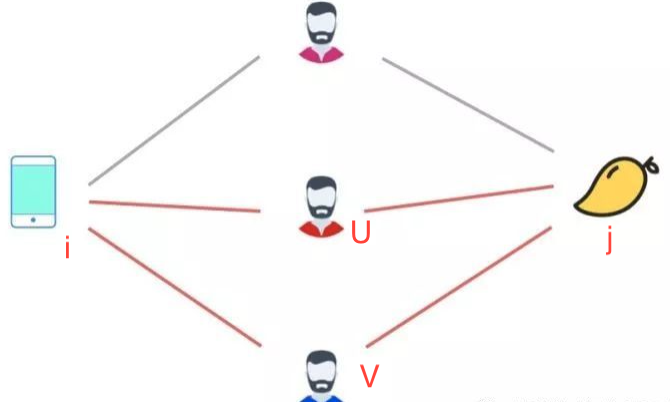
商品i,j之间的相似性通过用户关系来传递的。考察都购买了物品 i 和 j 的用户 u 和用户 v ，如果这两个用户共同购买的物品越少，则物品 i 和 j 的相似性越高。
Swing算法的表达式如下：
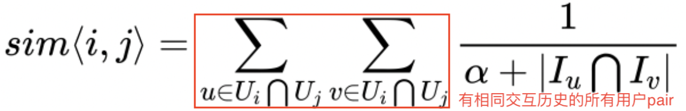 
含义：如果多个user在点击了一个item的同时，都只共同点了某一个其他的item，那么这两个item一定是强关联的；如果两个user pair对之间构成的swing结构越多，则每个结构越弱，在这个pair对上每个节点分到的权重越低。
1.4 深度召回模型
1.4.1 DSSM（2013）

word hashing：将词做break成连续的字母组，把字母组形成一个词典，此词典比直接词组成的词典维度小。
word编码为letter n-grams
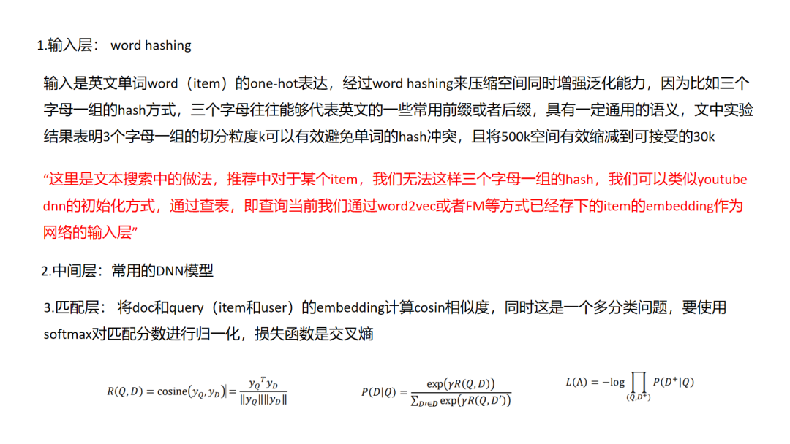
1.4.2 YouTube DNN
预测next watch，正样本是用户观看过的视频。

标签和上下文选择

文中使用的是（b）方法采样和构建标签（只留最后一次观看行为做测试集主要是为了避免引入未来信息( future information )，产生与事实不符的数据穿越问题 ），skip-gram是用的是（a）中的采样方法，这种方法实际上是使用了未来信息，在线上的时候会导致效果下降。
召回阶段
对几百万候选集进行粗筛
用户向量：
最后一层 ReLU 层的输出向量可以当作该用户的 Embedding 向量，在模型训练完成后，逐个输入所有用户的特征向量到模型中，就可以得到所有用户的 Embedding 向量 ，之后导入线上 Embedding数据库。
视频向量：
softmax 层的参数是一 个mxn维的矩阵， 其中m指的是最后一层 (ReLU层)的维度， n指的是分类的总数，也就是 YouTube所有视频的总数为n。那么视频 Embedding就是这个mXn 维矩阵的各列向量（类似word2vec）。
召回：
在预测某用户的视频候选集时，先得到该用户的 Embedding 向 量 ，再在视频 Embedding 向量空间中利用局部敏感哈希等方法搜索该用户 Embedding 向量的 TopK近邻。

- Example age: 训练样本产生的时刻距离当前时刻的时间, 没有采用视频上传距离此时的时间是因为避免稀疏性（视频可能5年前上传）。
- 概率计算：uv内积之后的softmax
排序阶段（预测观看时长）
引入更多特征进行精排
重点关注模型的输入层和输出层， 即排序模型的特征工程和优化目标。

输入
当前推荐视频的embedding 和 历史观看视频embedding的平均池化
用户语言 和 当前推荐视频的语言
该用户上次观看同频道视频的间隔时间
当前视频已经曝光过给该用户的次数
训练（加权逻辑回归）
根据观看时长对正样本进行加权，负样本的权重为1，Weighted LR的特点是，正样本权重w的加入会让正样本发生的几率变成原来的w倍，样本i的

训练Weighted LR一般来说有两种办法
- 将正样本按照weight做重复sampling，然后输入模型进行训练；
- 在训练的梯度下降过程中，通过改变梯度的weight来得到Weighted LR。
serving
YouTube推荐系统中 serving 时使用的值是指数形式的中间值，预估值

因为训练方式为 Weighted LR，
1.4.3 SDM
1.4.4 MIND

1.4.5 ESAM（2020, DA召回）
ESAM: Discriminative Domain Adaptation with Non-Displayed Items to Improve Long-Tail Performance。code
动机：使用DA的方法解决召回中“未曝光、长尾” item的问题。
排序模型用曝光过的样本训练，而召回所面对的item绝大多数是从未被曝光过。这二者之间存在Sample Selection Bias (SSB)。ESAM从迁移学习的新视角来看待Sample Selection Bias，将所有候选item划分成两个domain：
- Source Domain：曝光过的item（大部分是hot item），有label（e.g., 点击与否）
- Target Domain：未曝光过的item (大部分是长尾)，占候选集的绝大部分，没有label，我们不知道用户是否喜欢它们
EBR（2020）
召回是负样本的艺术🎨🎨🎨
Embedding-based Retrieval in Facebook Search
pinSAGE
DiDi
动机：考虑商品热度的演化过程，根据用户上下文特征自适应选择兴趣（捕获用户冷启动问题）

基于个性化推荐：用户历史行为
基于meta的推荐：用户画像和商品画像的双塔
动机：相似的用户具有相似的兴趣
基于商品热度的推荐：统计商品历史点击率
动机：商品热度包含热度值和演化趋势
24小时每小时的点击率
用lstm的原因是lstm能够学习到演化过程，比如两个商品ctr值相等，一个上升趋势一个下降趋势，此时应当选择上升趋势的推荐
fusion layer：上下文信息用户感知用户类型（新用户与否），用于调整上述三个兴趣的权重（Attention）
问题：
为什么不用V的上下文来attention 两个U向量
为什么不多路召回三个兴趣
多路召回的后续merge问题，因为不同路中的指标不是同一个尺度的，不好比较
2 排序
2.1 经典排序模型
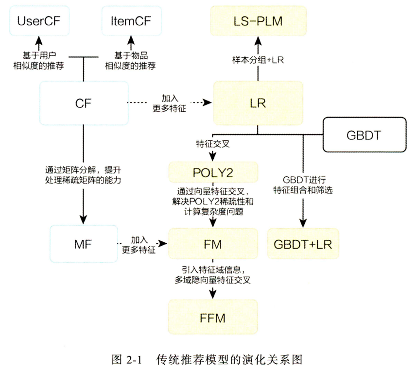
2.1.1 协同过滤

共现矩阵
2.1.1.1 UserCF
动机：相似的用户有相似的兴趣
描述：对用户u计算v的评分，首先根据共现矩阵找出和u的topN相似用户S，对于S中每一个用户，计算其对v的打分，最后根据用户相似度对打分加权求和。

根据共现矩阵计算u的topN相似用户S，维护一个相似度矩阵实现快速查找topN用户集合S
xxxxxxxxxx71缺点：21 存储n^2的用户相似度矩阵32 用户反馈行为稀疏43 不能考虑额外特征54 新用户无法推荐6特点：7UserCF 正适用于发现热点，以及跟踪热点的趋势
2.1.1.2 ItemCF
动机：用户对相似的物品有相似的兴趣
描述：对用户u计算v的评分，首先查找u的正反馈物品集合H，对于H中每一个商品h，计算h和v的相似度，最后根据“h和v的相似度”对“u对h的历史打分”加权求和。
维护物品相似度矩阵，用户请求之后，根据用户正反馈数据查找相似的topN商品，
根据相似度排序实现推荐列表，相似度计算：

xxxxxxxxxx51缺点：21 不能考虑额外特征32 新用户无法推荐4特点：5ItemCF更适用于兴趣变化较为稳定的应用场景
Item间的相似度计算方法
传统距离度量
- 余弦距离
- 皮尔森系数
Slope-One算法
对于商品vh和v，假设要把v推荐给u，vh是u的交互历史，u对v的打分可以通过“位移”得到

2.1.1.3 改进的ItemCF
动机 ：ItemCF算法不利用物品的内容属性计算物品之间的相似度，它主要通过分析不同用户对商品的行为计算物品之间的相似度，从内容属性出发改进。
2.1.2 矩阵分解

隐向量的长度为2，长度决定了隐向量表达能力的强弱。
用户和商品的相关性由内积得到
矩阵分解的求解方法
特征分解
SVD

SVD要求M是稠密的；SVD计算复杂度太大O（mn^2）
梯度下降

其中 K 是所有用户评分样本的集合
优缺点
1 泛化能力强（解决了CF的稀疏问题）
2 空间复杂度低，不需要存储 User（Item）相似度矩阵
3 分解结果可与其他特征结合
2.1.3 逻辑回归
综合利用用户、物品、上下文等多种不同的特征，将推荐问题转化为一个点击率预估问题
2.1.4 FM（隐向量自动交叉）
FM为每个特征学习一 个隐权重向量( latent vector)。 在特征交叉时，使用两个特征隐向量的内积作为交叉特征的权重 。
FM 是将矩阵分解隐向量的思想进行了进一 步扩展，从单纯的用户、物品隐向量扩展到了所有特征上。

实现二阶交叉
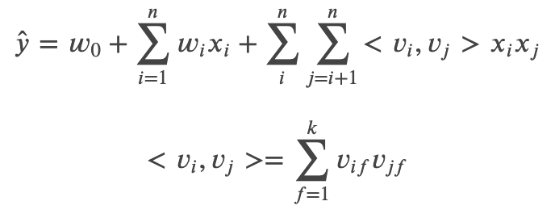

SGD求解参数（梯度计算如下）

SVM vs FM
为什么线性SVM在和多项式SVM在稀疏条件下效果会比较差呢？
线性svm只有一维特征，不能挖掘深层次的组合特征在实际预测中并没有很好的表现；而多项式svn正如前面提到的，交叉的多个特征需要在训练集上共现才能被学习到，否则该对应的参数就为0，这样对于测试集上的case而言这样的特征就失去了意义，因此在稀疏条件下，SVM表现并不能让人满意。而FM不一样，通过向量化的交叉，可以学习到不同特征之间的交互，进行提取到更深层次的抽象意义。
例子：
训练集中 x_ix_j 始终为零。在二阶多项式核 SVM 中，由于参数权重 w_{i,j} 得不到更新，模型无法学到 x_i 和 x_j 交叉带来的信息。但是在 FM 中，x_i 和 x_j 的参数并不完全由 x_i 和 x_j 的乘积决定。具体来说，每一维特征的表征向量由该维特征与其它所有维度特征的交叉共同决定。于是，只要存在某个 k 使得 x_i 和 x_k 的乘积不总是为零，那么第 i 维特征的表征向量 v_i 就能够学到有效的信息—同理对 v_j 也有同样的结论。于是乎，哪怕在训练集中，x_ix_j 始终为零，其参数 ⟨v_i,v_j⟩ 也是经过了学习更新的，因此能够表现出很好的泛化性能。
2.1.5 FFM（特征域）
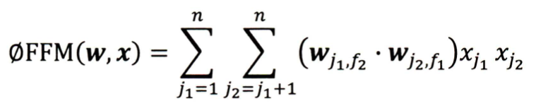
每个特征域为其他每个特征域学习一个权重
实现二阶交叉
2.1.6 GBDT+LR or GBDT+FM
实现快速的高阶特征交叉,树中每个节点的分裂是一个自然的特征选择的过程，而多层节点的结构则对特征 进行了有效的自动组合，把 GBDT 所有子树的特征向量连接起来，即形成了后续 LR 模型输入的离散型特征向量。

GBDT 由三棵子树构成,每棵子树有 4 个叶子节点，输入一个训练样本后，其先后落入"子树 1"的第 3 个叶节点中，"子树2" 的第1个叶节点, "子树3" 的第 4 个叶节点。最后连接所有特征向量，形成最终的特征向量。
决策树的深度决定了特征交叉的阶数 。 如果决策树的深度为 4，则通过 3 次节点分裂，最终的叶节点实际上是进行三阶特征组合后的结果。
缺点：GBDT 容易过拟合，以及 GBDT 的特征转换方式实际上丢失了大量特征的数值信息。
2.2 深度排序模型
写在前面
排序是cross的艺术🎨🎨🎨，在构建推荐模型的过程中， 从应用场景出发，基于用户行为和数据的特点，提出合理的改进模型的动机才是最重要的。
DNN已经发展到现在了，理论上可以解决问题，那为什么还要设计fancy的网络结构？
显示建模网络结构，用于学习一些我们希望它学到的先验知识，加速收敛，如各种cross层的设计就是为了学习强的关联规则

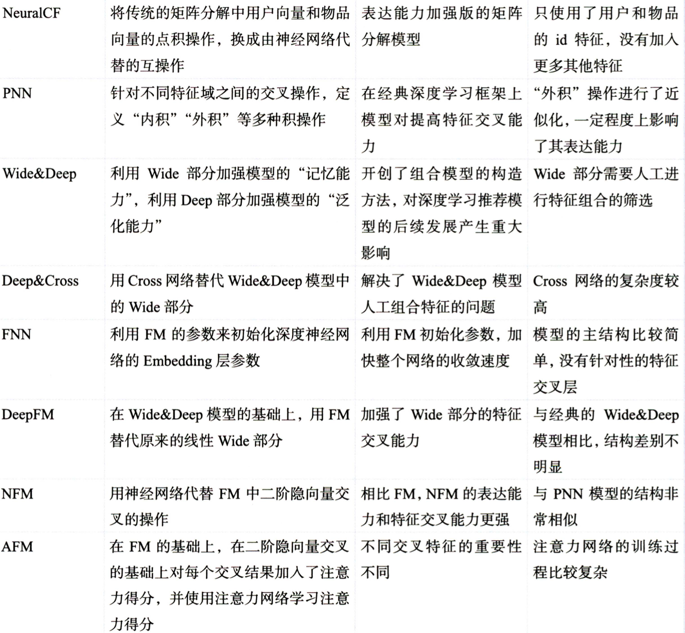

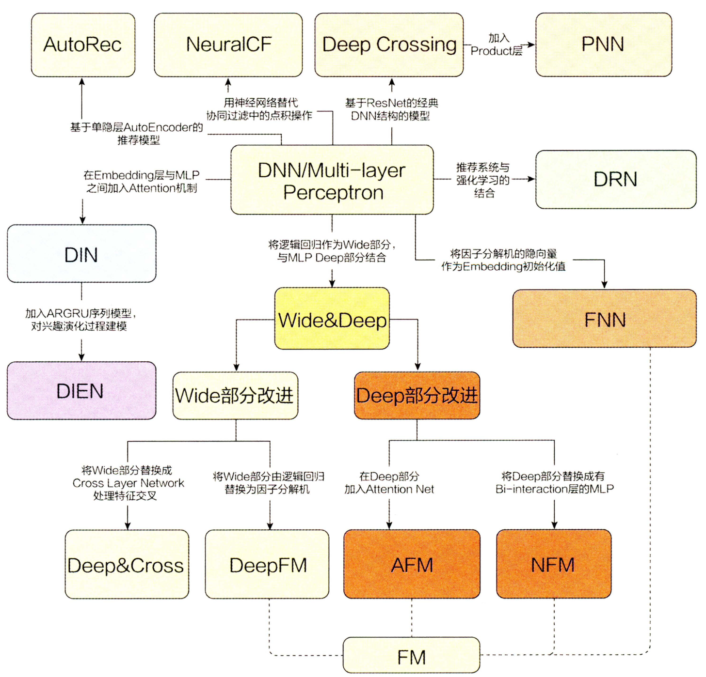
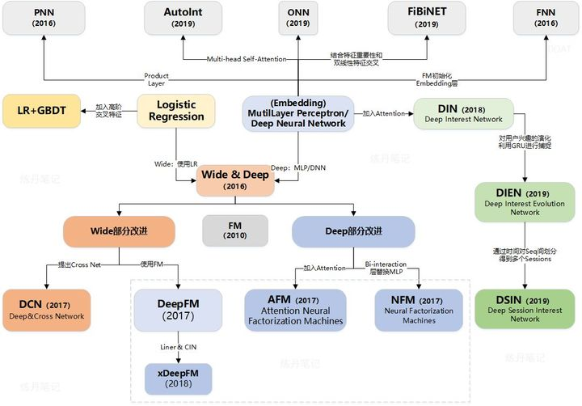
AutoRec (2015)
网络结构
AutoRec使用单隐层神经网络的结构来解决构建重建函数的问题，输入为一个商品的评分向量（所有用户对此商品的评分），输出为decoder后的商品评分向量（the original missing ratings can be generated by auto-encoder）。
Loss为正则化的MSE，只计算the observed ratings in each vector
AutoRec 模型的推荐过程
当输入物品i的评分向量为时， 模型的输出向量就是所有用户对物品 i 的评分预测。 其中的第 u 维就是用户 u 对物品 i 的预测打分，通过遍历输入物品 向量就可以得到用户 u对所有物品的评分预测，进而根据评分预测排序得到推荐列表。
以上介绍的 AutoRec输入向量是物品的评分向量，因此可称为 I-AutoRec，如果换做把用户的评分向量作为输入向量， 则得到 U-AutoRec。 在进行推荐列表生成的过程中， U-AutoRec 相比 I-AutoRec 的优势在于仅需输入一次目标用户的用户向量 ，就可以重建用户对所有物品的评分向量。 也就是说，得到用户的推荐列表仅需一次模 型推断过程 ; 其劣势是用户向量的稀疏性可能会影响模型效果。
2.2.1 Deep Crossing（2016）
embeding - 拼接 - 残差MLP做深度特征交叉 - 输出
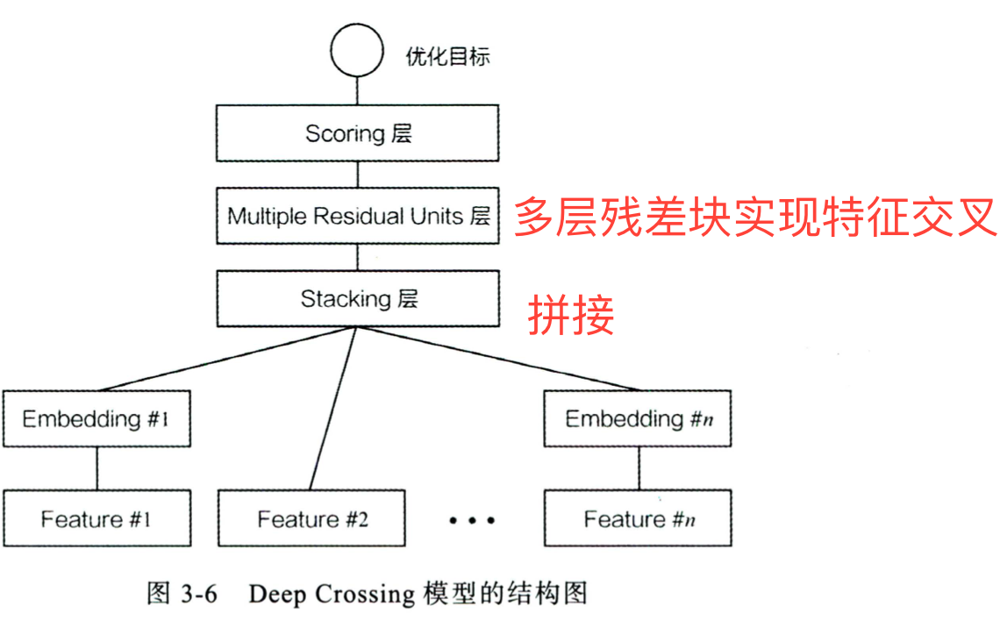
先拼接，拼接之后在连接一层网络可以实现特征交叉
打分层一般选用逻辑回归
2.2.2 NeuralCF（2017）
动机：用网络实现User/Item隐向量（embedding）的特征交互
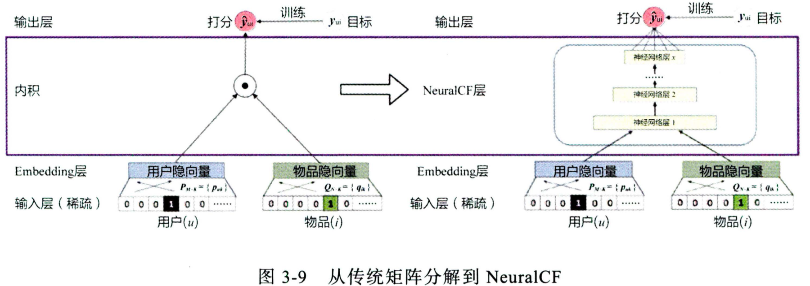
将传统矩阵分解中间内积换成MLP（先拼接再连接MLP），实现User和Item特征特征更充分的交叉，但是仍然没有引入额外的特征

把通过不同互操作网络得到的特征向量拼接起来，交由输出层进行目标拟合。
2.2.3 PNN（2016）
动机：
- NFM实现了User/Item的交互，但是引入多组特征向量之后怎么交互？
- 将简单的拼接换成了乘积层（特征两两交互之后再拼接），提出了多种特征交叉方式，如内积和外积。

- Embeding成相同的特征维度（保证乘积层顺利进行）
- 乘积层由线性操作部分（z，和常数1进行乘积后拼接）和乘积操作部分（p，向量内积、外积）组成。
外积：得到一个矩阵（由于embeding同维度，此处为方阵），为了降低计算复杂度，文中提出一种得到“外积矩阵”方法：
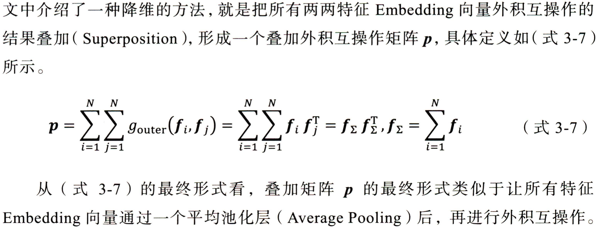
乘积层和MLP连接之前的额外操作

2.2.4 FNN（2016）
动机：类似deep crossing，改进之处为：用 FM 模型训练好的各特征隐向量初始化 Embedding 层的参数，解决embeding收敛速度慢的问题
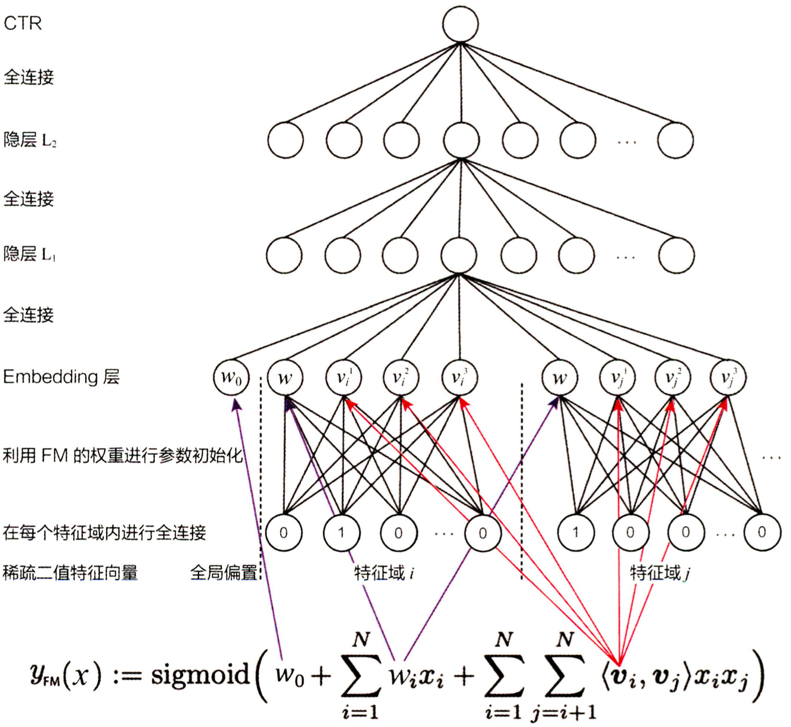

2.2.5 Wide&Deep（2016）
动机：综合原始特征及交叉特征，让特征交叉的方式更加高效
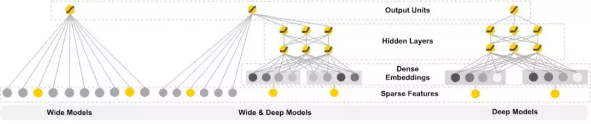
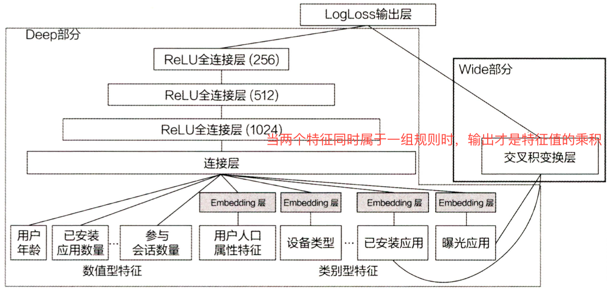
wide部分让模型具有“记忆能力”，使得部分强特征直接作用于结果；deep部分让模型具有“泛化能力”，实验高阶特征交叉。
输入特征分析
- deep输入全部特征，
- wide输入已安装（历史）和曝光（待推荐），相当于学习一个关联规则
Wide&Deep联合训练
在联合模型中，Wide和Deep部分的输出通过加权方式合并到一起，并通过logistic loss function进行最终输出。
对于加法，梯度会进行比例分配。
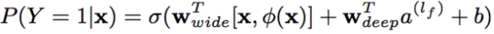
2.2.6 DCN（2017）
动机：增加wide部分的交互力度，使用多个cross层。
问题：为什么cross层没有激活函数？
wide侧偏重于原始特征，为了学习到原始特征之间的patten，cross层的每一个中间层都在和x0进行计算，达到了记忆性的效果

中间层的计算：（
）： Cross Layer可以进行堆叠来拟合任意阶的交叉特征
引入了残差结构
缺点：
DCN的乘积层相当于
DCN-M（2020）
2.2.7 VDCN
动机：DCN对原始embed进行了拼接然后外积，对某个特征embedding vector中任意两维也进行了交叉，vdcn将其做了向量化的改造,只考虑具体特征之间的交叉. 并行地训练k个cross net, 每个cross net只负责embedding vector中特定维度的交叉。
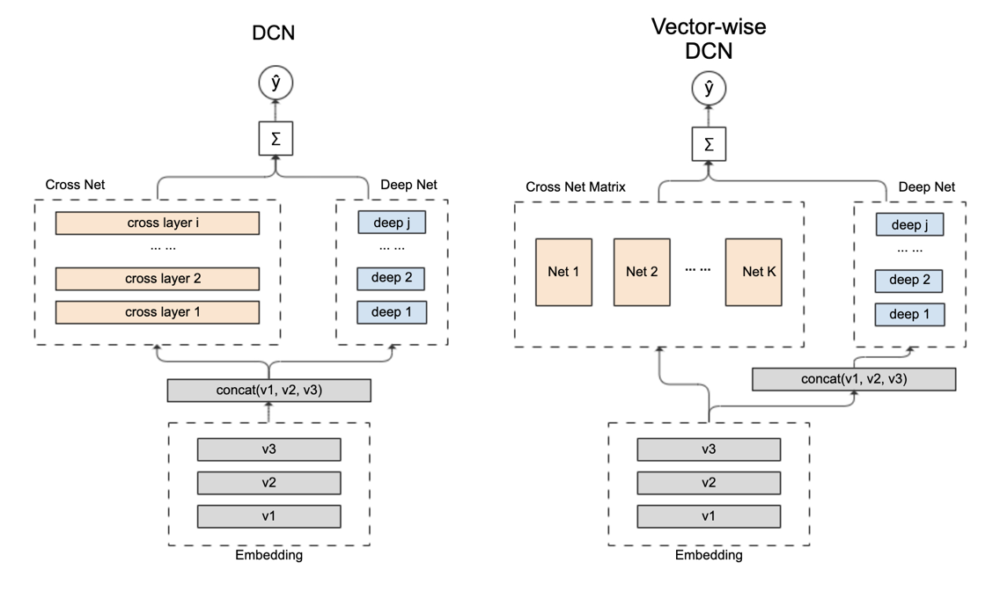
embedding之后输入x0为
(None, feture_num, embed_size)假设某层输入数据是xl，形状为
(None, feture_num, embed_size)中间层的计算：（
）：
- xl和kernel逐点积，逐点积之后形状保持不变
- 沿feature_num轴进行sum，形状变为
(None, embed_size)- 扩展维度为
(None, 1, embed_size)- 和x0进行逐点积（广播），形状为
(None, feture_num, embed_size)- 加bias，bias形状和kernel一样
- 加xl

Vector-dcn is an improvement of DeepCrossNet.
Compared to origin dcn, vdcn only consider interaction of different features field.
More specifically, we apply outer product on each dimension of features embedding.
Denote that there are
nfeatures and embedding dimension isd,OriginCrossNet applies outer product on vector with size of
d * n,while VectorCrossNet applies outer product on vector with size of
nonddimensions parallelly.
其中DCN Matrix的维度为d*d，然后每个和一个不同的w乘，最后的向量进行拼接后接上MLP
2.2.8 NFM（2017）
动机：用一个表达能力更强的函数替代原 FM 中二阶隐向量内积的部分（用网络学习f(x)），用特征交叉池化层实现embedding向量的二阶交叉。
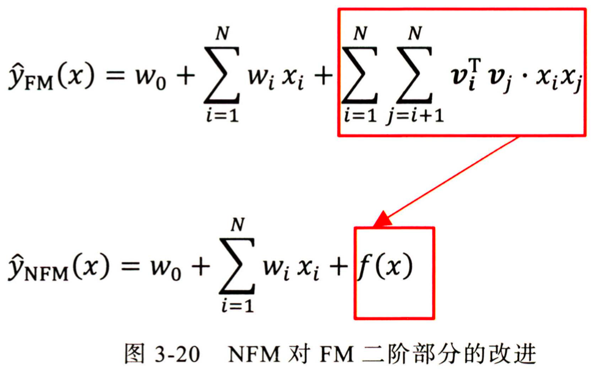


使用原始的特征的值值乘以Embedding vector：
- B-interaction 层
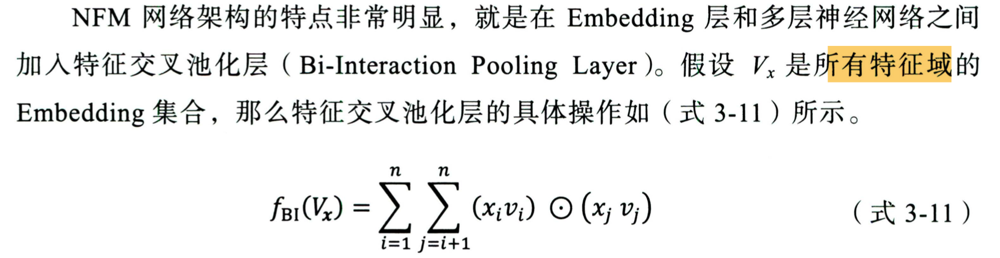
将V_x = {x_i v_i}转化为单一向量：将两两embedding向量的元素相乘后, 将交叉特征向量取和,得到池化层的输出向量
这个输出只有一个向量,维度仍然是K，可以理解为就是FM的二阶输出.
FM的二阶部分：
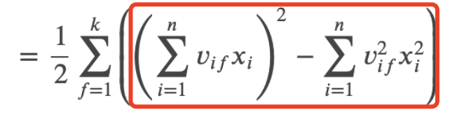
2.2.9 AFM (2017)
动机：NFM中的特征交叉池化层最后对交叉特征进行了无偏好加和，AFM利用attention加和

该注意力网络的结构是一个简单的单全连接层加 softmax输出层的结构， 其数学形式如下所示：


xxxxxxxxxx231def call(self, inputs, **kwargs):2 shape = inputs.shape # (batch_size, feature_nums, emb_dim)3
4 # step 1. get element-wise interaction <v_i, v_j>*x_i*x_j5 v_x_1 = K.expand_dims(inputs, axis=1) # [batch, 1, input, emb]6 v_x_2 = K.expand_dims(inputs, axis=2) # [batch, input, 1, emb]7 cross = v_x_1 * v_x_2 # [batch, input, input, emb]8 # reshape to [batch, input**2, emb]9 cross = K.reshape(cross, shape=(-1, shape[1] ** 2, self.embedding_size))10
11 # step 2. get attention weight with attention net12 # we use a two layer MLP with size of [ attention_factor, 1]13 # to calculate attention weight matrix a_ij14 a1 = K.dot(cross, self.attention_w) + self.attention_b # [batch, input**2, factor]15 a1 = K.relu(a1)16 a2 = K.dot(a1, self.attention_p) # [batch, input**2, 1]17 a_matrix = K.softmax(a2, axis=1)18
19 # step 3. attach weight / sum pooling / projection20 a_cross = cross * a_matrix # [batch, input**2, emb]21 a_cross = Dropout(self.dropout_rate)(a_cross, training=True)22 a_cross = K.sum(a_cross, axis=1) # [batch, emb]23 return a_cross
2.2.10 DeepFM (2017)
动机：用FM层代替wide部分，加强特征组合的能力。
注意：FM是通过每一维特征的隐向量内积来提取特征组合的
总体结构

FM 和 Deep 共享相同的 Embedding层（embed学习的是latent vector）
左侧的FM部分对不同的特征域的 Embedding进行了两两交叉，也就是将 Embedding向量当作原 FM 中的特征隐向量 。

最后将 FM 的输出与 Deep 部分的输出一同输入最后的输出层，参与最后的目标拟合.
Embedding层
categorical field is represented as a vector of one-hot encoding
continuous field is represented as the value itself, or a vector of **one-hot encoding after discretization。
将原始特征（m个特征域）concat到一起得到d维向量x。不同特征域的vector长度可能不同，但是embedding之后是相同的 k-dim
每个特征域学习一个隐向量，这个隐向量是embedding
FM部分
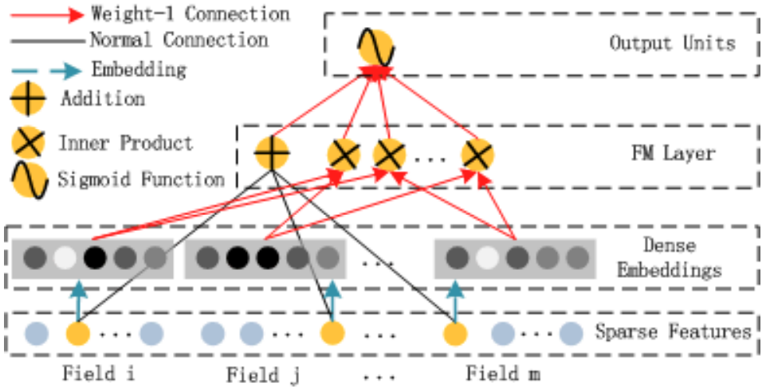

一阶特征
直接将原始特征进行
二阶交叉特征（红色连接线）
每个特征域经过embedding后得到一个k维的embedding，选择两个特征i，j，交叉的是i和j的每一个维度，其交叉权重是对应的特征域的 latent vector：
Deep部分

2.2.11 DeepAFM
- FM模型利用隐向量的方式自动学习特征组合,我们通过神经网络的方式实现了这一传统算法.
- FM的一个潜在问题是认为所有交叉特征同等重要,我们通过引进Attention机制对交叉特征进行重调权,实现Attentional-FM来修正这个问题.
- 无论FM/AFM都只能拟合2阶显示特征交叉,为了弥补这一点限制,我们又在AFM基础上加上DNN,合并为双塔结构的DeepAFM.
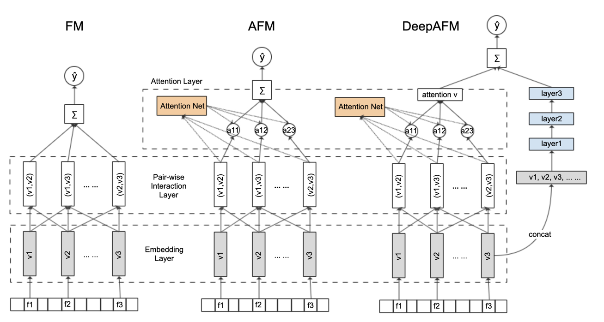
2.2.12 xDeepFM


2.2.13 AUTOINT（2018）

输入和embedding层
多头注意力机制
self-attention来显示学习这些特征的交叉关系
第h个头的计算如下，对于每个 e_m, 将H个头的结果concatenation，
残差连接
输出层
2.3 行为序列建模
Item
训练数据量很大的情况下，item 的大部分信息都可以被 ID 的 Embedding 向量进行表示。
User
User ID 十分稀疏，很容易导致模型过拟合，所以需要大量的泛化特征来较好的表达用户。这些泛化特征可以分为两类：一类是偏静态的特征，例如用户的基本属性（年龄、性别、职业等等）特征、长期偏好（品类、价格等等）特征；另一类是动态变化的特征，例如刻画用户兴趣的实时行为序列特征。而用户实时行为特征能够明显加强不同样本之间的区分度，所以在模型中优化用户行为序列建模是让模型更好理解用户的关键环节。
行为序列建模的方法
- DNN对序列中的 item 进行 Sum-pooling 或者 Mean-pooling 来表达用户的兴趣。
- DIN 引入注意力机制，考虑行为序列中不同 item 对当前预测 item 有不同的影响
- DIEN 解决 DIN 无法捕捉用户兴趣动态变化的缺点。
- DSIN 针对 DIN 和 DIEN 没有考虑用户历史行为中的 Session 信息，因为每个 Session 中的行为是相近的，而在不同 Session 之间的差别很大，它在 Session 层面上对用户的行为序列进行建模
- BST 模型通过 Transformer 模型来捕捉用户历史行为序列中的各个 item 的关联特征，与此同时，加入待预测的 item 来达到抽取行为序列中的商品与待推荐商品之间的相关性。
- 美团 Transformer 用户行为序列建模。
序列模型存在的工程问题
- 序列结构意味着串行的推断过程，模型无法被并行加速，使得模型服务成了整个推荐过程的瓶颈。
2.3.1 DIN（2018）
动机：行为序列建模，根据用户历史生成user向量的过程中给不同特征赋予不同的注意力权重（待排item对行为序列做attention）

利用候选商品和历史行为商品之间的相关性计算出一个权重
Q是候选商品，K、V是历史行为商品对应的特征。

Attention 权重没有经过softmax，为了保持原来兴趣之间的原始差异，这个差异不希望被非线性变化缩放
注意力得分由激活单元生成，激活单元的输入层是两个 Embedding 向量，经过元素减( element-wise minus )操作后，与原 Embedding 向量一同连接后形成全连接层的 输入，最后通过单神经元输出层生成注意力得分。
留意图 3-24 中的红线，可以发现商铺 id 只跟用户历史行为中的商铺 id序列发生作用，商品 id 只眼用户的商品 id 序列发生作用，因为注意力的轻重更应该由同类信息的相关性决定。
mini-batch aware regularizer
当不使用正则化时，模型很容易会陷入过拟合，而用传统的l1,l2正则化时，在参数更新时，对每个参数都要进行一轮计算，复杂度大大提高，因此本文提出了一种高效的mini-batch aware正则化方法，只有对每个mini-batch中出现的稀疏特征进行l2正则化
只有对每个mini-batch中出现的稀疏特征进行l2正则化，利用上式在反向传播更新参数时，只有出现在第m个mini-batch中的特征才会被更新，减少了计算量。
data adaptive activation function(Dice)
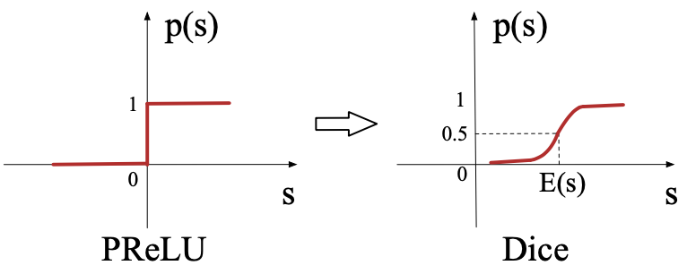 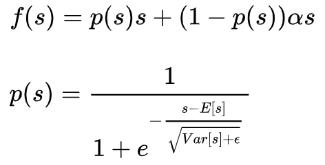 PRelu的突变点在0，但是当数据分布不同时，应该让数据自适应的选择分界点，这里改进了PRelu函数，利用Dice。利用每个mini-batch的均值和方差进行处理，依赖数据选择分割点，在均值附近平滑。
2.3.2 DIEN（2019）
https://jesse-csj.github.io/2019/11/24/DIEN/
动机：在行为序列上抽取用户的兴趣，并在这个基础上挖掘用户兴趣的动态进化过程。引入注意力机制的 AFM 或 DIN 模型，仅是对不同行为的重要性进行打分，这样的注意力得分是时间和序列无关的。

( 1 )行为序列层: 把原始的 id 类行为序列转换成 Embedding 行为序列 。
( 2 )兴趣抽取层(GRU): 模拟用户兴趣迁移过程，抽取用户兴趣。
( 3 )兴趣进化层: 在兴趣抽取层基础上加入注意力机制（和DIN的attention计算思路一致），即考虑和目标广告的相关性来模拟与目标广告相关的兴趣进化过程。
辅助Loss生成兴趣状态（interest state）
兴趣导致连续的用户行为，我们使用下一次的行为来作为辅助监督信息来更新 hidden state。这里可以认为第一个GRU的h(t)是提取出的用户的初步兴趣表示，为了更好地表达用户的兴趣，作者还为兴趣抽取层引入了一个有监督学习：输入是按照时间步排列的商品embedding向量，假设第t个时间步输入e(t)，GRU输出隐单元h(t)，令下一个时间步的输入向量e(t+1)作为正样本，随机采样负样本e(t+1)，且e(t+1)’ != e(t)，h(t)与正负样本向量分别做内积，得到预测结果，并引入一个辅助的logloss：

最终的Loss为

L_target是CTR任务的logloss函数，将CTR的loss和辅助loss相加定义为整个网络的loss进行优化。α是超参数来平衡两个loss的权重。这里辅助loss有几个好处，当GRU处理较长序列的时候有助于降低反向传播的难度，对于商品embedding的学习也有助益。
兴趣进化层
将目标商品的embedding向量与第1个GRU的输出隐向量发生交互，生成attention score，计算公式如下所示：其中，hₜ 是隐向量，e是目标商品的嵌入向量，W是需要训练的参数矩阵。最后用softmax对attention score进行归一化。

对于如何结合attention和GRU，文中介绍了三种方式：
GRU with attentional input (AIGRU)
用attention直接影响这一层的输入：

相比LSTM，GRU将forget gate和input gate合并为一个update gate
Atten加到了原始更新门上
2.3.3 DSIN
Session
用户的兴趣在一个较短的时间内比较专注，我们把这较短的时间段称为一个Session，比起DIN和DIEN把行为序列全打包到一起，在DSIN中把行为序列划成一个个Session再分别处理。
2.3.4 MIMN（2019）
动机：长序列行为建模。长序列可能包括用户的多个兴趣。在 DIEN的基础上，将兴趣细分为不同兴趣通道，模拟用户在不同兴趣通道上的演化过程，生成不同兴趣通道的记忆向量，再利用注意力机制作用于多层神经网络。
上图直观表示了DNN、DIN、DIEN、MIMN的区别。
- DNN：对待用户行为序列，一视同仁，不分重点。
- DIN：基于序列中商品与候选商品的关系，通过注意力机制学习序列中不同商品的权重。
- DIEN：考虑用户兴趣随时间的变化（使用户行为有了时间维度，用户行为被排成时间序列），让模型具备了下次购买的预测能力。
- 对用户多个"兴趣通道"进行建模，更精准地把握用户的兴趣变迁过程，避免不同兴趣之间相互干扰。（根据用户行为中商品种类的不同排列成了多个序列）
BST
Other Features
用户行为序列中的item特征
- Sequence item（红色）：item_id和category_id
- positional feature（蓝色）：
SIM（2020）
Search-based User Interest Modeling with Lifelong Sequential Behavior Data for Click-Through Rate Prediction
动机：用户行为序列越长，包含的用户兴趣也就越丰富，但是同样也会带来噪声和线上部署困难两个问题，本文提出解决方案。

知识蒸馏模型
Privileged Features Distillation at Taobao Recommendations
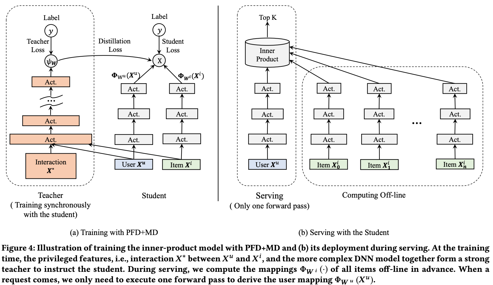
https://dl.acm.org/doi/pdf/10.1145/3340531.3412704
2.4 多任务模型MTL
MTL 倾向于希望多个任务的样本空间相同，即适用的场景是强业务相关的子任务，如 用户是否观看 和 观看时长。
对于样本空间不同的多任务（如DIDI_MTL联合建模两个样本空间不同的资源位），采用Cross Domain模型可能更加合适。
2.4.1 ESSM (2018)
动机：如何优化cvr，解决真实场景中CVR预估面临数据稀疏以及样本选择偏差这两个关键问题。
背景：user对item的点击概率低，则user对这个item的转化率也低，这是不成立的。因此先预测ctr，然后在ctr基础上预测cvr不能得到全局最优解。CVR预估模型的本质，不是预测item被点击，然后被转化的概率（CTCVR），而是假设item被点击，那么它被转化的概率（CVR）。在训练过程中不能直接使用全部样本，因为对于那些sw但是没有ck的item，假设他们被点击了，是否会被转化我们无从知道（不知道label）。
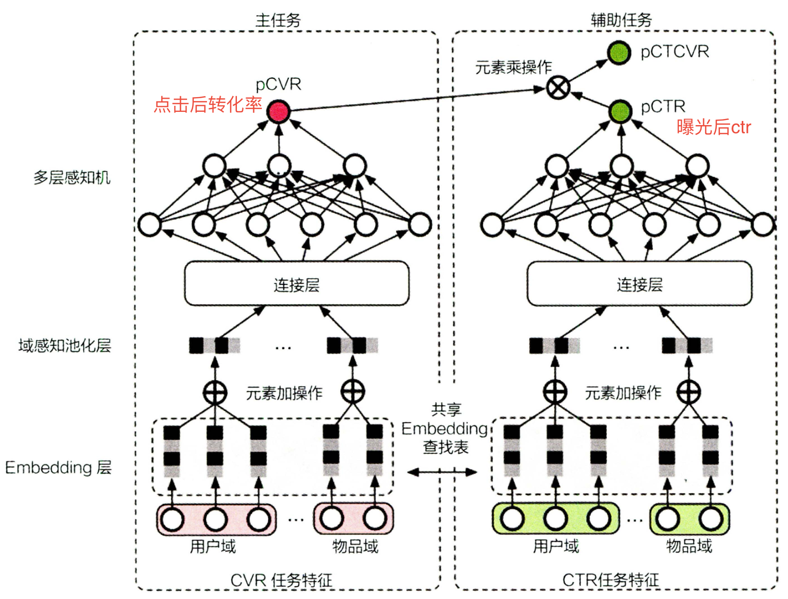
共享 Embedding 层：解决 CVR 任务正样本稀疏的问题，借助 CTR 的数据梯度回传更新embedding。
样本选择偏差
训练CVR模型时以点击未转化为负例，点击并转化为正例。但模型serving时对曝光item进行cvr预估，而非只对点击后的item进行预估，即训练数据与实际要预测的数据来自不同分布。
解决方法：pCVR、 pCTR 和 pCTCVR 融合进一个统一的模型，因此模型可以一次性得出所有三个优化目标的值

pCTR对应的label为click，而CTCVR对应的label为click & conversion，这两个任务是可以使用全部样本的，通过这学习两个任务，再根据上式隐式地学习CVR任务
2.4.2 MMOE （2018）
底层包含多个 Expert，然后基于门控机制，不同任务会对不同 Expert 的输出进行选择性过滤（每个任务都配备一个 Gate 模型）。
缺点：所有的 Expert 是被所有任务所共享
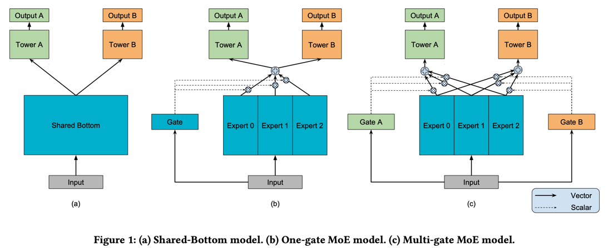
两个任务直接共享模型的 bottom 部分，只在最后处理时做区分。
将 input 分别输入给三个 Expert(共享特征，不共享参数)和Gate，Gate 输出每个 Expert 被选择的概率，然后将三个 Expert 的输出加权求和，输出给 Towers。
计算方式
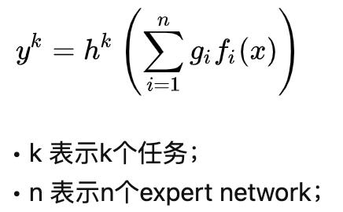
其中
xxxxxxxxxx641class MMoE(Layer):2 def build(self, input_shape):3 '''input_shape: (None, feature_num)'''4 assert input_shape is not None and len(input_shape) >= 25 feature_num = input_shape[-1]6
7 '''expert kernel'''8 self.expert_kernels = self.add_weight(9 name='expert_kernel',10 shape=(feature_num, self.units, self.num_experts),11 )12 if self.use_expert_bias:13 self.expert_bias = self.add_weight(14 name='expert_bias',15 shape=(self.units, self.num_experts),16 )17
18 '''gate kernel'''19 self.gate_kernels = [self.add_weight(20 name='gate_kernel_task_{}'.format(i),21 shape=(feature_num, self.num_experts),22 ) for i in range(self.num_tasks)]23
24 if self.use_gate_bias:25 self.gate_bias = [self.add_weight(26 name='gate_bias_task_{}'.format(i),27 shape=(self.num_experts,),28 ) for i in range(self.num_tasks)]29
30 self.input_spec = InputSpec(min_ndim=2, axes={-1: input_dimension})31
32 super(MMoE, self).build(input_shape)33 34 def call(self, inputs, **kwargs):35 gate_outputs = []36 final_outputs = []37 '''expert'''38 expert_outputs = K.tf.tensordot(39 inputs, self.expert_kernels, axes=1) 40 #(None, feature_num)*(feature_num, self.units, self.num_experts) ==> 41 #(None, self.units, self.num_experts)42 if self.use_expert_bias:43 expert_outputs = K.bias_add(x=expert_outputs, bias=self.expert_bias)44 expert_outputs = self.expert_activation(expert_outputs)45
46 '''gate个数和task个数一样每个gate的维度为experts的维度'''47 for index, gate_kernel in enumerate(self.gate_kernels):48 gate_output = K.dot(x=inputs, y=gate_kernel)#(None, self.num_experts)49 if self.use_gate_bias:50 gate_output = K.bias_add(x=gate_output, bias=self.gate_bias[index])51 gate_output = self.gate_activation(gate_output)52 gate_outputs.append(gate_output) #[(None, self.num_experts), ...]53
54 '''gated expert'''55 for gate_output in gate_outputs:56 expanded_gate_output = K.expand_dims(gate_output, axis=1) #(None, 1, self.num_experts)57 expanded_gate_output = K.repeat_elements(58 expanded_gate_output, self.units, axis=1) #(None, self.units, self.num_experts)59
60 weighted_expert_output = expert_outputs * expanded_gate_output61 62 final_outputs.append(K.sum(weighted_expert_output, axis=2)) # [(None, self.units), ...]63
64 return final_outputs
2.4.3 PLE（2020）
PLE：Progressive Layered Extraction
创新点：
- share和task-specific分开输入，分开训练expert实现信息分割，减少特征噪声的交互
- 堆叠的CGC 参数并不是完全独立的，是通过更深层的网络进行逐渐层级独立的，最上层的share expert
- 相比较MMOE，CGC移除了一个任务与其他任务的专家网络之间的关系，让不同的专家网络专注的学习不同的知识，最后在用门控网络基于输入动态的融合专家 网络的表示，CGC 更加灵活的平衡了任务和样本之间的冲突和关联。
MTL概述
- 模型概述
学习方式&Loss
学习方式
- 联合训练阶段：每次迭代时，随机挑选一个任务，然后从这个任务中随机选择一些训练样本，计算梯度并更新参数。
- 单任务精调阶段：基于多任务学习得到的参数，分别在每个单独任务进行精调(Fine-Tuning)。其中单任务精调阶段为可选阶段。当多个任务的差异性比较大时，在每个单任 务上继续优化参数可以进一步提升模型能力。
Loss
通常的 MTL 损失函数是每个独立任务 loss 的加权和，K 是任务数，
存在的问题
负迁移现象
多任务学习模型, 由于现实世界中各任务间的 Complex and competing task correlation, 导致出现性能退化. 原因: 不能有选择性的获取其它任务的知识.
跷跷板现象
任务不相关时，多个专家网络联结在一起容易导致多个任务此消彼长现象 (Seesaw Phenomenon，MTL模型在一个任务上表现优于单任务模型，而在另一 个任务上表现差于单任务模型)
CGC（Customized Gate Control）模块
CGC 可以看作是 Customized Sharing 和 MMoE 的结合版本。每个任务有共享的 Expert 和独有的 Expert。
vector: expert
selector：input
gate用于定义expert的组合方式
对任务 A 来说，将 Experts A 里面的多个 Expert 的输出以及 Experts Shared 里面的多个 Expert 的输出，通过类似于 MMoE 的门控机制之后输入到任务 A 的上层网络中。
首先得到底层各 Expert 的输出 (包含 shared experts 和 task k 专有 expert)：
PLE模型结构
为了学习到更深层的语义，还需要更深层的 MTL 网络。为了解决这个问题，使用了一种 progressive layered extraction(PLE) 用于级联 CGC 模块。
与CGC网络（PLE里的Extraction Network）不同的是：
- 在底层的Extraction网络中，除了各个子任务的gating network外，还包含有一个share部分的gating network，这部分gating network的输入包含了所有input，而各个子任务的gating network的输入是task-specific和share两部分；
- 在上层Extraction Network中input不再是原始的input向量，而是底层Extraction Network网络各个gating network输出结果的fusion result。
- 最上面一层每个expert输入的全特征
Loss联合训练
上述常用Loss有以下缺点：
因为用户行为导致的，样本空间不同的问题，比如我们只能在点击之后才能后分享或评论，导致了任务的样本空间不同。
这里的样本空间不同是个需要解决的问题，即一般的MTL适用的场景是强业务相关的子任务，如 用户是否观看 和 观看时长。那么为什么DIDI_MTL要联合建模两个样本空间不同的资源位呢？，应该是User相同的cross domain问题
解决办法：在训练的时候使用整个训练数据，但是在计算每个任务的 loss 时，忽略其样本空间之外的样本。
第二个问题就是多任务模型对每个任务的 loss 权重很敏感，它决定了每个任务对 loss 的相对重要性，但是在模型的训练过程中，每个阶段每个任务的相对重要性可能不同。
解决办法：每个任务的 loss weight 在训练的过程中动态变化，刚开始设置一个初始值，在训练的每个epoch动态更新这个 weight。
2.4.4 ad_star_MTL
Baseline
- Single-Domain: Treat each domain independently
- Collective-Domain: Merge domains an treat them as a single domain
CrossDomain
- Transfer knowledge from source to target
- Assumption: information overlap between users or items across different domains - overlaps of users, items, attributes, …
排期
2021/08/10：场景分析 & 样本分析 & 样本表准备（输入特征分割 及 task specific 的新特征）
2021/08/11~12：初步模型搭建
2021/08/13：模型参数调优
2021/08/**：Loss的组合方式（帕累托最优解？）
场景分析
- 三个资源位的点击是否具有强相关性
- 是否具有竞争关系（两个资源位同时出现在用户视野，用户只点击其中一个）
- 是否具有嵌套关系
样本分析
- 不同资源位的特征相同，使用CGC需要特征拆分，将用户和商品画像特征作为shared expert，资源位各自的ctr和交互信息作为独立的expert
- 样本空间没有交集，每个任务使用各自样本空间上的样本，示性函数根据某一个指示特征控制？
- 对于一个MTL框架，serving阶段如何控制数据流向？
模型分析
硬共享
任务相关性较高时，效果好；相关性不高时，出现负迁移。
不对称共享
如果资源位之间遵从嵌套关系，适合不对称共享
CGC
此处的gate是
task粒度的还是expert粒度的？继续堆叠MLP多个子任务塔
损失
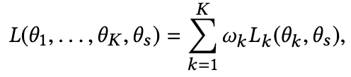
每个任务使用各自样本空间上的样本
多个任务进行加权和（只有在任务间不存在竞争关系时才有效，多个资源位同时出现在视野中时认为有竞争关系）
权重随着训练轮数变化
权重选择
- 随着epoch的增加，每个epoch中，各个loss衰减比例不同，基于此比例动态更改Loss权重
- TODO：帕累托最优解 (参照本科模糊数学讲义)
2.5 CrossDomain模型
动机：利用丰富领域（source domain）的较为丰富训练数据来提升稀疏领域（target domain）的推荐精度（解决冷启动问题）。如何综合用户在多个Domain的交互信息组合一个更强大的Cross Domain 的 RS？CrossDomain RS希望达到这样的一个推荐效果：用户观看了某个电影，RS推荐和电影相关的音乐、影评文章或者周边产品。
值得一读的paper
A theory of learning from different domains.
Domain adaptation in regression
2.5.1 Survey（2021）
Cross-Domain Recommendation: Challenges, Progress, and Prospects
Domain 定义
Content-level relevance
same content or metadata features, e.g., key- words and tags, from user preferences and item details. However, there are not common users/items in these domains, e.g., Amazon music and Netflix.
User-level relevance
common users and different levels of items – such as attribute-level (i.e., items in the same type (e.g., book) with different attribute values, e.g., textbooks and novels) and textbftype-level (i.e., items in different types, e.g., movies and books).
Item-level relevance
there are common items (e.g., movies) and different users, e.g., the users in MovieLens and Netflix systems. These users are totally different or it is difficult to distinguish the overlapped users among different recommender systems.
CDR方法
1. Single-target CDR
通过source domain中精确的 richer data（如反馈信息、side info）来提升 target domain（sparer data） 的推荐效果。
2. Multi-domain Recommendation
是SDR的推广：适用多个domain的信息，向
e.g. 首页同时推荐不同类目商品（母婴、3C、生鲜），不同类目作为不同domain
3. Dual-target CDR & Multi-target CDR
面临的挑战和解决方向
Building content-based relations (content- level relevance)
the existing content-based transfer approaches first create links based on the common contents, e.g., user/item attributes, social tags, semantic properties, thumbs-up, text information, meta- data, and browsing or watching history. Then, they trans- fer user/item data or knowledge across domains.
对于两个domain共享的feature，共享embedding，或者加入一些两个domain的交叉特征
如何生成精确的embedding
uses multi-source information such as ratings, reviews, user profiles, item de- tails, and tags to generate more representative embeddings of users and items.
聚类（分层聚成tag，共享tag）；关系学习；半监督学习；矩阵分解；图模型；三元组关系(user-item-domain)，强化学习等。
如何学习精确的mapping relations？
a naive transfer strategy is to directly replace the features/embeddings of users/items in the target domain with those of their similar users/items in the source domain. 类似滴滴处理尾部商品的做法，把头部商品替换成和他属性相似的尾部商品 This strategy is simple but not intelligent. An elegant way is to first learn accurate mapping relations between two domains, and then transfer the knowledge (e.g., user/item embeddings and rating patterns) learned from a source domain to a target domain according to the learned mapping relations. Follow- ing such an intuition, how to learn accurate mapping relations becomes a crucial challenge.
如何设计一个灵活的dual模型结构？
how to design an effective framework for a dual- target CDR scenario is still very challenging because the auxiliary information from the target domain may negatively affect the performance in the source domain.
如何优化UI的embedding？
- 从sequence中学习embedding，类似行为序列建模
- 通过另一个domain的信息提升当前domain的embedding质量（如社交domain更多u-u关系，购物domain更多u-i关系）
- considers the bi-directional latent relations between users and items and applies a latent orthogonal mapping to extract user preferences to transfer users’ embeddings in a bidirectional way (i.e., Source → Target and Target → Source)。
- graph生成embedding之后，通过element-wise attention来整合 common users/items across domains.
- 考虑data sparsity degrees of common users, to combine the embedding of common users.
负迁移现象
Multi-target CDR负迁移现象明显
In [Cui et al., 2020], the authors use a shared heterogeneous graph to generate more informative embeddings of users and items among multiple domains. 可否从这个方向优化，用graph堆叠代替CGC模块的堆叠？？
fixed or flexible combination strategies，用于控制哪些embedding共享，类似CGC
一些思考🤔🤔🤔
- 两个任务之间的桥梁是：相似的用户，相似的物品，相似的content信息，如何把这些信息作为桥梁，在建模时显示定义这些桥梁，训练过程加强桥梁之间的链接
- 用这些overlap信息单独相互训练这些task（task_i的overlap特征训练task_j的label，
i!=j)
2.5.2 DANN（2015）
目标：target domain没有标签，且和source domain样本分布不同，如何寻找一种“迁移”关系，使得两个domain特征在经过特征提取器映射之后得到的特征具有 domain不变性 ，这样，得到的前馈网络可以应用于目标域，而不受两个域之间位移的影响。
方法：多任务对抗训练，使source domain 预测的损失最小，使两个域分类器的损失最大。后者鼓励在优化过程中出现域不变特性。

传统的DA做法：
- 分析两个domain的分布，根据分布在source domain中根据targer domain的分布采样数据
- 或者寻求一种明确的特征空间转换，将源分布的特征映射到目标分布的特征
Loss和鞍点
损失计算（左），最优解是损失超平面上的一个鞍点（右）
parameters
GRL（梯度反向层）
梯度翻转仅仅发生在GRL层中，粉色部分本身仍然是向着最小化二分类误差的方向更新以确保domain classifier是一个有效的分类器。即，GRL后面正常使用梯度优化二分类，当梯度回传经过GRL层时，乘以一个负的系数。
没有引入参数，forward时：恒等映射，backpropagation时：calculates the gradient from the subsequent level, multiplies it by −
Q&A
训练完成之后如何在target domain上预测？
直接用在source domain上训练的 label predictor 预测target domain 的label
为什么不直接加负的loss用SGD做BP训练？
对于Loss1+Loss2形式的优化，两个loss对应函数的值域一般都是大于0（mse，交叉熵），在SGD的过程中loss有一个下界0。对于Loss1-Loss2形式的优化，Loss2可以取值到正无穷，对应的loss值可以趋于负无穷，在SGD的过程中总的loss值很快趋于负无穷，导致优化无法进行或者无法判断优化是否在进行
加入GRL之后在优化特征提取层的过程等价于使得domain classifier错分（正预测负，负预测正），即domain classifier仍具有很强的区分能力，为什么有利于share的特征的提取呢？
其实目标应该是使得 domain classifier 没有区分能力，即正负样本的输出概率值均为0.5，要达到这个目的，训练的时候不能训练到完全收敛，否则结果会大幅度下降。
如果domain discriminitor 都给一样的标签，但是不用grl 会是啥样呢？
使用GRL和直接优化负的loss是等价的吗？
不等价，GRL只是前面阶段梯度取负，后面阶段梯度还是取正的，以达到maxmin的效果，而不是从头到尾都取负梯度
2.5.2 DARec（2019）
SDR, User–No Item overlap问题
动机：两个domain分布可能是不一样的，如何用网络学习shared 信息？
为了解决稀疏问题，经过U-AutoRec得到user隐向量
此隐向量输入DANN（学习 linear and nonlinear shared rating patterns）
采用对抗训练方式学习share信息
- rating predictor：分别预测两个domain的rating，使得这部分loss最小。
- domian classifier：对抗学习学习share的rating pattern，使得分类器loss最大；
Loss
相对于DRNN的改动：
- AutoRec解决数据问题
- 用一个相同的 rating predictor 预测评分向量的回归值（注意loss只计算正反馈的评分位置）
ESAM（2020）
动机：解决召回中如何处理“未曝光”item的问题。
AFT (2021)
动机：解决异质Item域的MDR问题
MDR is proposed to improve all recommendation domains simultaneously, where the key point is to capture informative domain- specific features from all domains. AFT (Adversarial feature translation) learns the feature translations between different domains under a generative adversarial network framework.
基于生成对抗网络（GAN）学习不同领域之间的特征转移（feature translation）。
稀疏性
- user-item点击行为的稀疏性（这个是推荐系统本身拥有的稀疏性问题）
- 跨领域特征交互的稀疏性（这是多领域推荐特有的稀疏性问题）
Bridge it
背景：两个domain（S和T），
user overlap较少（<15%）item没有overlap
两个domain的连接较弱，信息迁移通路狭窄
两个domain的行为序列都极度稀疏：（平均小于2）
导致由行为序列表示user不准确，进一步如果再迁移则更容易受到噪声影响
建立两个domain的item之间的关系，用source的item标识target的item，伪造序列
Linking Domains (建立二分图)
- 用户tag打散，用于加强两个domain间item的连接
- 去除热度商品的影响
MTG（Multi-task Generative Network）
用于产生target domain中非交叉用户在source domain中的行为
The core idea of MTG is to use source domain multi- classification task to generate items that interact in the source domain for target domain non-overlapped users. For source domain multi-classification task, the training set is the data of source do- main, and the test set is the data of target domain non-overlapped users. The target domain task uses a part of the target domain data as training set, and shares the user embedding layer with the source domain task, which can prevent the source domain task from overfitting to the source domain data to a certain extent.
由于overlap极少，只基于交集建模导致效果不佳
AKTN（Adaptive Knowledge Transfer Network）
b）中的source user behavior（MTG多分类的输出）是为了表示target user
2.6 多业务模型
场景描述：当用户搜索地点如 “望京” 的时候，用户的需求不是很明确，此时搜索的结果的商家列表中会包含望京附近餐饮、电影、休闲娱乐、酒店等多种业务的结果，这就是一个多业务混合排序场景。
多业务场景存在如下几点挑战：
- 因业务之间存在共性和特性，如何让模型兼顾这两种特性，实现更好的数据学习。比如到店餐饮对距离特征非常敏感，而旅游景点业务对距离特征相对不敏感。
- 业务天然存在高频和低频特性（比如外卖和旅游），导致模型的训练数据中多业务样本数量不平衡。
- 各个业务往往有自己不同的主目标，如何满足不同业务的目标，最终能够提升搜索的用户体验。
2.6.1 美团多业务建模
整体架构图
召回融合模型（融合层）
为了融合不同业务的召回结果，给 L2 精排一个比例合适的候选集，设计一个多业务配额模型来平衡多业务召回的比例。这种基于配额对多路召回结果进行合并的做法在搜索、推荐场景中十分常用，比如淘宝首页搜索、美团推荐等。
一维目标多业务配额
为了刻画用户搜索 Query 对三路业务召回的意图强弱，我们采用多目标的建模方式，以每一路召回是否被点击、下单为目标进行建模，实现了多业务配额初版模型。
二维目标多业务配额
为了加强多业务配额模型的个性化，对上述模型进行改进：
- 从以“召回方式点击“的一维目标升级到”召回方式“ 叉乘 “业务”的二维目标
- 行为序列建模模块引入Transformer Layer。
- 为了解决新召回源接入的冷启动问题，引入了人工经验层，包括业务先验和历史统计，综合模型输出决定每一路召回的配额。
多业务排序模型（精排层）
独立子网络拆分
酒店子网络的输入包括酒店独有特征和主网络的打分输出，旅游子网络的输入包括旅游独有特征、主网络的打分输出、主网络最后一层 FC，酒店和旅游子塔输入不同是因为业务逻辑不同导致数据分布差异大，这是实践出的结果，最终的输出是对三个输出的加权求和。
针对加权求和的权重部分，我们采取了两种方式对权重进行设定：
- 第一种，采用硬切分的方式，就是说权重向量是一个 One-hot 稀疏向量：对酒店商家进行预测，只选取酒店子网络的输出，其余类推。
- 第二种，采用软切分的方式，把多业务配额模型的输出作为权重值。
线上实验发现第二种方法比第一种好，我们认为采用硬切分会导致子塔分支的参数只能被对应业务的数据更新，而各业务的数据占比不均导致学习不佳，而软切分会达到一种知识迁移的作用。
子网络权重自学习
在精排模型中集成权重生成子网络，该子网络的输入主要是一些 Query 维度，Context 维度的特征。（DIDI 召回也用的上下文）
子网络特征自适应（MMoE）
- 采用 MMoE 来自动学习特征表征输出给上层子网络，从而取代人工设计子网络的输入。
- 精排模型的损失函数除了采用用户线上反馈计算的主 Loss 外，额外添加了业务的分类交叉熵 Loss，达到预测某业务 Item 得分时，对应的业务子塔权重最大的目的。
多业务特征表达优化（PLE-CGC）
3 Embedding方法
将用户和物品embedding后，利用用户向量和物品向量的相似性，可以直接在推荐系统的召回层（一般用于召回）快速得到候选集合，或在排序层直接用于最终推荐列表的排序。

3.0 Age-Net（Before Embedding）
在embedding前的特征处理决定了模型表现的上界 adaptive multi-granularity embedding extraction and fusion framework
背景：推荐模型的测试集与训练集存在数据分布不一致（打车是个稀疏的行为，每天的用户波动太大，通过箱线图反应同一个特征在相邻两天的分布差异），导致serving表现不佳。
动机：特征离散化是影响最终推荐效果的重要因素之一。一般来说, 细粒度分桶可以更大程度保留数据分布的信息,但是容易引入噪音, 增加模型过拟合的风险。粗粒度分桶会损失一部分信息, 但是可以更好的应对数据波动。优于特征分布具有波动性，使用一个固定粒度的分桶方法不能满足需求，如何利用不同粒度之间的互补性, 来提升模型的预测能力和稳定性。
证明分桶粒度影响：对于某个粒度，预测相邻几天的离线auc，观看auc波动情况，证明细粒度分桶具有更好的记忆性（auc高，但是随时间衰减严重），粗粒度分桶具有更好的泛化性（auc低但是鲁棒）。
3.1 word2vec (2013)
原理：具有相似语意的词上下文一般也相同，因此学习到的词向量相近。
假定每个词都跟其相邻的词的关系最密切，即每个词都是由相邻的词决定的(CBOW)，或者每个词都决定了相邻的词(SG).
缺点：静态词向量，无法解决一词多义的问题。
3.1.1 网络结构
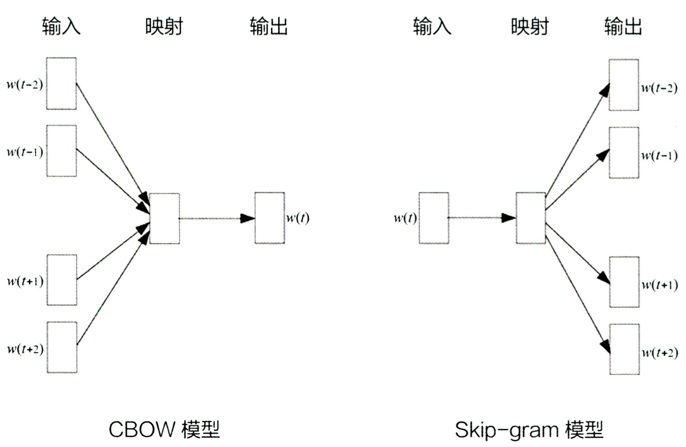
输入层：词的onehot编码
CBOW：输入的是上下文每个词的onehot的加和平均，隐藏层输出为
SG: skip-gram输入层输入的是中心词的onehot
中间层：没有激活函数（为了计算内积），经过第一个连接权重矩阵（V*N,N是嵌入维度）之后得到投影层的输入（输出）
输出层：投影层经过第二个连接权重矩阵（N*V）之后实现输入词向量和输出词向量的内积
softmax层：将内积进行softmax输出概率向量
3.1.2 训练样本
1. skip-gram
选取一个长度为 2c+1 (目标词前后各选 c个词)的滑动窗 口， 从语料库T(T句子)中抽取一个句子，将滑动窗口由左至右滑动，每移动一次，窗口中的词组就形成了C个训练样本（输入是一个词，输出是上下文中的一个词）。

2. CBOW
cbow 一次性输入上下文的 onehot 编码，在隐藏层做加权求和
3.1.3 目标函数
skip-gram
假设上下文单词之间是相互独立的，一个样本（此样本的窗口为2）的联合概率的计算拆成概率相乘
取log之后得到窗口内各词对应损失的和，再考虑所有样本T，对t求和：

交叉熵损失函数的定义：
概率p定义方式如下：
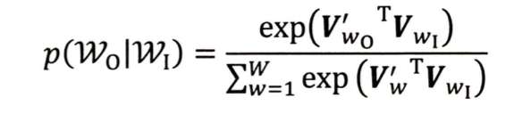
CBOW
注意这里没有窗口内的求和
3.1.4 负采样
词典过大会导致输出层softmax输出计算量过大，相比原来需要计算所有字典中所有词的预测误差，负采样方法只需要对采样出的几个负样本计算预测误差，损失函数变为：
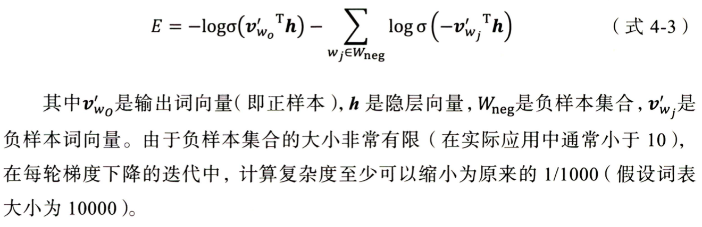
其中
为sigmoid函数
负采样如何进行
一个词被采样的概率，取决于这个词在语料中的词频


和 函数的区别
在0~1区间，经过3/4次方，对于越小的值，这种增益越大。从抽样的角度来看，通过对权重开3/4次幂，可以提升低频词被抽到的概率。在保证高频词容易被抽到的大方向下，通过权重3/4次幂的方式，适当提升低频词、罕见词被抽到的概率。如果不这么做，低频词，罕见词很难被抽到，以至于不被更新到对应的Embedding。
3.1.5 层级softmax
为什么用Huffman树
由于huffman树在构造的过程中考虑了每个code的频率，每个样本相当于做了Huffman编码，信息论中huffman树的编码长度最短，对应过来，希望做二分类的次数更少。
3.1.6 Q&A
优点
- Embedding 生成考虑上下文，信息更加丰富
- 低维稠语义向量
- 简单通用性强
缺点
- 固定维度
- 静态词向量，无法捕获一词多义
- 忽略了词的顺序关系
词向量优劣评价
相似度评价
通常用人工创建的单词相似度评价集来评估：用0～10的分数人工对单词之间的相似度打分，然后看此打分和w2v给出的余弦相似度打分之间的相关性。
类推问题评价
对于类推问题
- 推断语义的类推问题：
- 推断语法的类推问题：
- 推断语义的类推问题：
如何增加新词
将上一次训练的权重作为下一次学习的初始值
CBOW和SG的区别
哲学解释
- skip-gram，每个词在作为中心词的时候，实际上是 1个学生 VS K个老师，K个老师（周围词）都会对学生（中心词）进行训练。
- cbow，1个老师 VS K个学生，K个学生（周围词）都会从老师（中心词）那里学习知识，但是老师（中心词）是一视同仁的，教给大家的一样的知识。
sg比cbow更适用于预测生僻字的场景
- cbow用周围词预测中心词，将输入的context word 加起来做average，在梯度回传的时候对周围词的调整是统一的：求出的gradient的值会平均分到周围词上，当周围次中有生僻字时，该生僻词没有受到专门的训练，因此在遇到生僻词是，预测效果将会大大降低。
- skipgram是用中心词预测周围词，预测的时候是一对word pair，等于对每一个中心词都有C个词作为output，对于一个词的预测有C次，所以能够更有效的从context中学习信息，但是总共预测K*V次，训练比CBOW慢。
计算复杂度
cbow预测行为的次数跟整个文本的词数几乎是相等的，为O(V)
sg的复杂度为O(KV)，cbow更快。
FastText (子词嵌入)
动机：在word2vec中，我们并没有直接利用构词学中的信息，例如，“dog”和“dogs”分别用两个不同的向量表示。fastText提出了子词嵌入(subword embedding)的方法，从而试图将构词信息引入word2vec中的跳字模型。
子词产生
- 以单词where为例，在单词的首尾分别添加特殊字符“<”和“>”。
- n-gram，如n=3时生成：“<wh”“whe”“her”“ere”“re>”以及特殊子词“
”。
词向量
对于一个词
经过训练后，子词bit-wise求和
优点
较生僻的复杂单词，甚至是词典中没有的单词，可能会从同它结构类似的其他词那里获取更好的词向量表示。
3.2 item2vec (2016)
原理：将用户历史行为视为序列做embeding，相比skip-gram，摒弃了时间窗口的概念，认为序列中任意两个物品都相关。
目标函数：
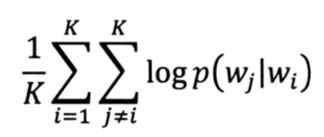
对比Skip-Gram的目标函数为：
在优化目标定义好之后， Item2vec 剩余的训练过程和最终物品 Embedding 的产生过程都与 Word2vec 完全一致，最终物品向量的查找表就是 Word2vec 中词向量的查找表
缺点：只能处理序列形式的数据，graph embedding应运而生。
广义item2vec

"物品塔"模型，输入特征由用户行为序列生成的 one-hot 特征向量，变成了可包含更多信息的、全面的物品特征向量，经过物品塔内的多层神经网络结构，最终生成一个多维的稠密向量。
3.3 deep walk（2014）
序列embedding和graph embedding的过渡方法。

用户行为的选取
由于用户兴趣随时间变化，因此在实践过程中，用户行为序列一般截取一个时间窗口，只考虑时间窗口内的用户行为，我们称之为 session-based 用户行为，一般大小为一小时。
在实际过程中，还会进行一些降噪处理：
- 点击少于一秒的视为无意点击，需移除；
- 去除过渡活跃用户，如三个月内购买超 1000 件商品，或者点击总数超过 3500 次；
- 有些商家会不断更新商品的细节。极端情况下，一件商品可能经过长时间更新后变成完全不同的商品。所以需要移除类似的Item。
建模方法
根据行为序列构建graph
用户 Ui 先后购买了物品 A 和物品 B，物品 A 和 B 之间的产生边， 如果后续产生了多条相同的有向边，则有向边的权重被加强。 在将所有用户行为序列都转换成物品关系图中的边之后，全局的物品关系图就建立起来了 。
随机游走
每个节点作为起始节点N次，在原始的网络结构上进行随机游走M步（达到设定的游走长度后，停止游走），获得一条条序列数据。
word2vec
将这些物品序列作为训练样本输入 Word2vec 进行训练，得到物品的 Embedding。
随机游走节点间的跳转概率：
如果物品关系图是有向带权图（当后续产生了多条相同的边时，连接权重被加强），节点

如果物品关系图是无向无权图，
缺点：
- 单纯通过用户行为序列形成graph，导致“长尾商品”无法被有效表征，引发冷启动问题。
- 对于无权重的图：游走得到的序列数据与实际的数据分布不符，会获得较多的冷门商品。
3.4 LINE（2014）
LINE (Large-scale InformationNetwork Embedding) 的核心思想是通过一阶相似度和二阶相似度明确定义了如何表征图中节点的相似度

一阶相似度
描述图中节点之间的局部相似度（节点之间存在直接相连的边），如上图中的节点6和7之间存在直接相连的边，所以1阶相似度较高
二阶相似度
节点5和6虽然没有直接相连，但是因为有大量重合的边1-4，所以认为节点5和6也是相似的，二阶相似度则是用于描述这种关系
3.4 node2vec（2016）
动机：同质性和结构性的权衡。通过调整随机游走权重使 Graph Embedding 的结果更倾向于体现网络的同质性或结构性。

同质性：距离相近节点的 Embedding 应尽量近似（U和
让游走更倾向于DFS：DFS倾向于在一个集团内部进行，是的集团内部节点embedding更为相似，表达同质性。
结构性：结构上相似的节点的 Embedding 应尽量近似（U和
让游走更倾向于BFS：BFS在当前节点的邻域游走，相当于对当前节点的周边信息进行微观扫描，捕获当前节点的性质，比如：是否是局部中心、边缘节点、连接性节点。
跳转概率

通过跳转概率控制DFS和BFS的倾向性。节点 t 跳转到节点 v， 再从节点 v跳转到周围各点x的跳转概率为 ，其中
，其中

其中，pq是参数，用于控制随机游走的倾向性：
p：返回参数，p越小，返回t的可能性越大，倾向于捕获结构性（BFS）
q：进出参数，q越小，随机游走到远方的可能性越大，倾向于捕获同质性（DFS）
通过不同的p，q参数可以产生不同的embedding效果，下图中左图倾向于捕获同质性（距离相近的节点颜色相近），右图倾向于捕获结构性（结构特点相近的节点颜色相近）

在推荐中的对应关系
同质性
同质性相同的物品很可能是同品类、同属性， 或者经常被一同购买的商品
结构性
各品类的爆款 、 各品类的最佳凑单商品 等拥有类似趋势或者结构性属性的商品
二者在推荐系统中都是非常重 要的特征表达。由于 Node2vec 的这种灵活性，以及发掘不同图特征的能力， 甚至可以把不同 Node2vec 生成的偏向"结构性"的 Embedding 结果和偏向"同质性"的Embedding结果共同输入后续的网络，以保留物品的不同图 特征信息。
3.5 EGES（2018）
动机：解决可扩展性（新商品/用户加入不用重新训练）；稀疏性（用户交互商品很少，数据稀疏）；冷启动（没有历史行为记录的用户或商品的初始化embedding的生成问题）
思想：在deep walk生成的graph embedding的基础上引入补充信息（User侧入人口统计学信息；Item侧如category, brand, price等），具有相似 Side Information 的 Uese或Item 应该离得更近。
补充信息embedding向量的生成思路
通过用户行为序列可 以生成物品关系图， 也可以利用"相同属性"、"相同类别"等信息建立物品之间的边，生成基于内容的知识图谱。 而基于知识图谱生成补充信息 Embedding 向量。根据补充信息类别的不同，可以有多个补充信息embedding 向量。
注意⚠️：
item原始的embedding 和 side information（例如category, brand, price等） 的 Embedding 是通过 word2vec 算法一起训练得到的。如果分开训练，得到的item_embedding和category_embedding（brand_embedding，price_embedding）不在一个向量空间中，做运算无意义。
即：通过 DeepWalk 方案得到 item 的游走序列，同时得到对应的category（brand, price）序列。然后将所有序列数据放到word2vec模型中进行训练。
如何融合多个embedding向量
常规的做法是在网络中加入平均池化层，将不同 Embedding平均起来。缺点是会导致有效Embedding 信息的丢失，且不同的 Side Information 对商品的 Embedding 有不同的贡献，因此在学习 Embedding 时考虑加权机制。具体做法为将加权平均后的 Embedding 向量输入 softmax 层，通过梯度反向传播，求得每个 Embedding 的权重
需要注意的是EGES模型采用了

SI0就是Item id本身，SI1-SIn就是n个所谓的Side Information，比如Item的类别，价格，标签等等。
这些Embedding经过一个加权平均的过程生成这个Item最终的Embedding。所以当一个Item没有历史行为信息的时候，也就是说没有SI0时，还可以通过其他特征生成其Embedding，这就大大提高了Embedding的覆盖率。
Q&A
EGES和word2vec的区别
EGES用最后一层的向量做embedding（交叉熵loss之前的那层），跟word2vec一样。每个item是构造一条样本inference出来的，然后用最后在各class上的prob distribution做embedding。
item 、price、ccate等embedding不是一个向量空间的为什么可以做加权求和？
他们确实不在一个向量空间。但问题是他们是在训练阶段加权求和的，所以他们所有相关的权重都是在统一的objective下训练的。所以可以求和。如果是几个feature完全单独训练，只在计算时候加和，会有一些问题。
GNN
传统的深度学习在图结构中表现效果较差，主要有两个原因：
- 图是复杂不规则的。因为图大小是任意的，拓扑结构复杂，没有图像的空间局部性，同时图没有固定的节点顺序，经常是动态的，有些还包含多模态的特征，所以导致传统的深度学习在图结构中效果较差；
- 图结构数据样本之间具有依赖。传统的深度学习算法一个核心假设是数据样本之间是彼此独立的，比如文本分类任务中两条样本是相互独立的。但是在图结构中每个数据样本节点可能和其他的样本节点相连，样本之间并不是相互独立的，而这些信息可以用于捕捉样本之间的依赖关系，所以图结构和图像、文本等数据不同。
动机：用邻居节点表征当前节点信息，GNN是提取节点特征的方法，通过聚合，更新，循环 学习到邻居的信息和结构信息。
样本：用户根据社交关系构成graph，样本为(node-pair, label)
正样本（稀疏）
高置信度的边，如：紧急联系人，助力好友，两个人拼车下一个单，青菜拼车的分享
负样本（大量）
负样本通过采样得到：
- 根据用户交互次数进行，对边进行降序排序，从尾部随机采样
- 类似目标检测时的负样本构造，对没有边连接的node随机采样
节点特征
- 属性特征：年龄，性别，用户所在城市。
- 结构特征：邻居的数量（是否距离加权），到某个节点的路径序列 或 根据距离的加权和：
- 裂变特征：和某个节点一起的 发起次数，助力次数，最近一次交互时间。
节点信息计算
聚合，更新，循环
以节点A为讨论对象，其邻居为：(B, C, D)
聚合（把邻居信息整合到自己身上，作为自身特征的补充）
对节点A进行一次聚合：邻居信息
一个简单的聚合函数为直接加权和：
此处聚合函数有很多可以优化的地方，如：根据邻居类别选择性聚合（类别内关联大于类别间关联）；根据邻居节点的度来分散权重（邻居的邻居越多，对当前节点影响越小）；Attention权重聚合邻居；加入各种先验知识后的选择方法，等。
更新（用邻居信息更新自身特征）
A的信息：
循环
一次聚合更新（一层GNN） 两次聚合更新（两层GNN） A中有BCD的信息 此时C有E的信息，A在聚合C时获取了二阶邻居E的信息，故A中有BCDE的信息 B中有AC的信息 - C中有ABDE的信息 - D中有AC的信息 - E中有C的信息 -
下游任务
通过聚合，更新，循环，我们得到了每个节点的特征表达，此时可以连接多种下游任务，计算loss，更新上述的参数W。
节点分类（反欺诈方面的应用）
关联预测（比如预测A和E是否存在潜在的连接，用于推荐问题）
两个节点特征拼在一起，做分类；或者根据两个节点embedding的距离预估类别
图的分类
图分类又称为图的同构问题，基本思路是将图中节点的特征聚合起来作为图的特征，再进行分类。
GCN（2017）
动机：改进GNN的聚合函数，A是邻接矩阵
聚合方法1（直接求和邻居信息）
聚合方法2（求和邻居信息和自己信息）
聚合方法3（邻居信息和自己信息求和之后平均）
比喻：你的工资等于你朋友工资的平均值。
存在的问题：考虑如下的一个社交graph，A只认识B一个人，B认识很多人，这时根据平均法，B的信息会聚合到A上，但是A和B的差距很大（你与偶像的差距，不能把偶像的工资加到你身上）。
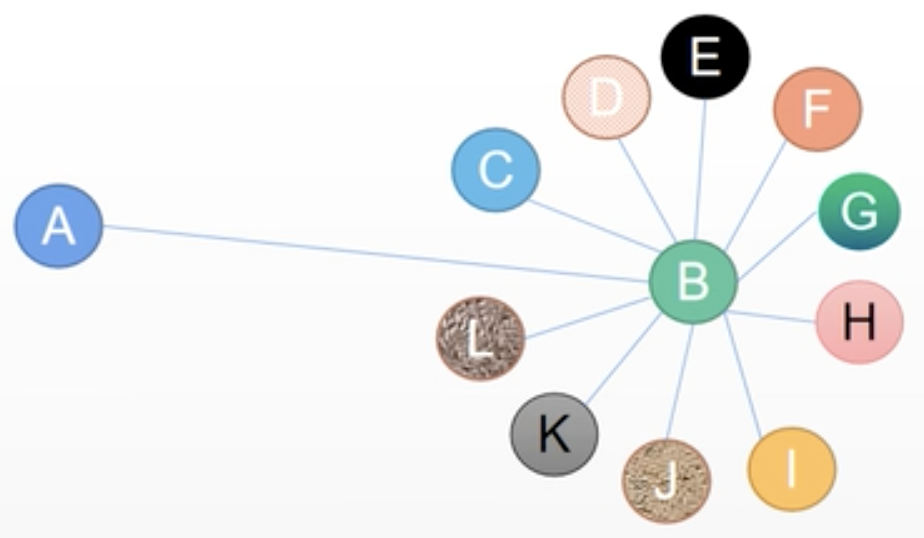
GCN解决了上述平均聚合的不合理问题，在平均的基础上根据节点的度进行了对称归一化
GCN层间的传播公式：
GraphSage
支持小批量训练，子网络采样，sample后聚集在一起-->训练
采样
聚合&更新&循环♻
用采样的邻居学习当前节点embedd，
- 用平均值
- 用户序列经过序列模型处理，如lstm
实验验证方法
线上ctr，
实验组：裂变关系+挖掘出来的关系
对照组：裂变关系
离线指标
挖掘出来的边是否命中真实的边来评估
局部敏感哈希
4. 重排

4.1 MMR

4.2 行列式点过程
- item间的多样性
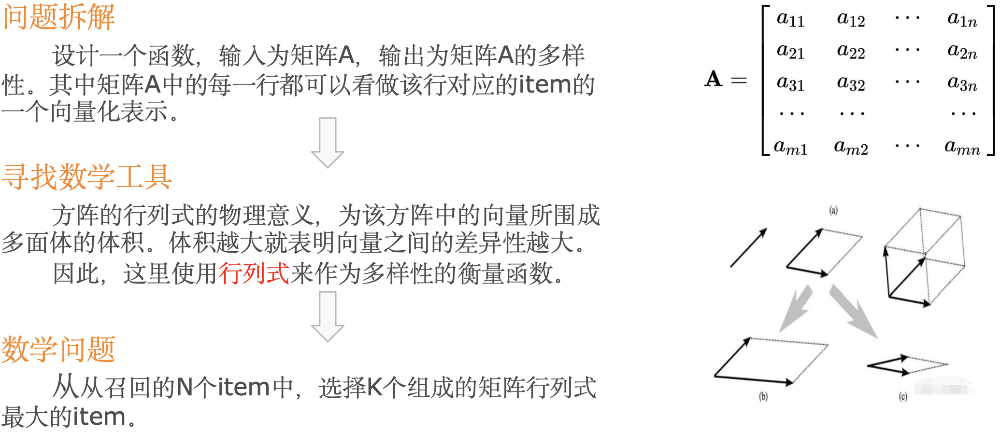
item和user的相关性
上有排序模型的度量，例如 item向量和user向量的余弦距离
优化目标的一般性描述

4.2 PRM（2019）
对 Initial list 做一次重排序，

其中
是商品特征向量， 是用户向量对每个商品的兴趣向量（类似于embedding）， 是位置编码
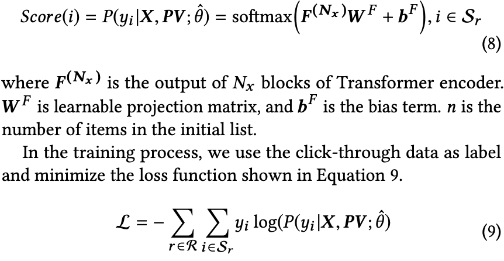
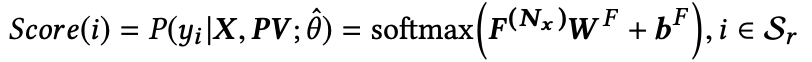
5. 长尾/冷启动问题
5.0 长尾效应
5.0.1 长尾产生的原因
推荐系统推荐新商品或者长尾商品的次数少 ==> 交互信息少 ==> embedding不精确，导致恶性循环。解决时应从帮助这些item快速获取用户反馈入手。
5.0.2 长尾的处理方法
- 召回阶段：首先保证召回阶段长尾商品可以被召回出来（如：EGES，策略）
- 排序阶段：对item按照item热度加权
特征方面
- embedding时从 side information（相当于用粗粒度的tag代替细粒度的id），通过之前训练好的 side info 的 embedding 表示具有相同side info的长尾商品。
- 其他特征则加入更多内容属性特征（如发布人属性，发布时间，所属tag类型等），而非交互特征
- 根据内容类特征聚类，新商品的信息（比如embedding）由聚类簇内部商品的信息均值代替，或最近邻代替。
训练样本选取方面
- 热点物品适当的降权，减少热度商品对模型的过度影响
- 适当多采样交互较少的长尾商品
训练/模型方面
单独对长尾商品进行训练或 fine tuning
通过CDR、MTL模型进行知识迁移
基于上下文信息的融合策略
加入上下文信息，利用fusion策略使得模型自适应选择 千人千面，全局，半全局
5.1 基于规则的冷启动
5.1.1 用户冷启动
默认推荐列表
热门排行榜" "最近流行趋势" "最高评分"等榜单作为默认的推荐列表
基于用户属性构建个性化推荐列表
利用点击率等目标构建一个用户属性的决策树，在每个决策树的叶节点建立冷启动榜单，在新用户完成注册后，根据用户有限的注册信息，寻找决策树上对应的叶节点榜单，完成用户冷启动过程。
用户属性获取
- 注册信息
- 引导用户进行兴趣选择
5.1.2 物品冷启动
- 聚类：新物品聚类到之前的某一类（基于什么属性聚类是业务强相关的）
- 新物料有倾向性的被强曝光
- 根据物品内容特征
5.2 基于模型的冷启动
5.2.0 基础ML
聚类
利用聚类快速定位新物品所在的cluster，找到相似物品，然后取其Embedding的平均。
决策树
如根据用户/物品的特征训练一颗决策树，再把冷启动的用户/物品根据有限的信息分配到决策树的某个分支中去，再根据分支对应的默认列表进行推荐等等。
5.2.1 元学习(meta learing)
本质是学习一个更智能的id_embedding初始化方法，在模型中加入更多用户或物品的属性特征（meta feature），而非历史交互特征。
如：
- 用户注册信息：年龄、性别、学历、职业以及根据ip和GPS获取的地理信息等
- 第三方数据管理平台获取用户画像
- 物品meta：物品的分类、标签、描述文字等
- 注册时引导用户输入兴趣分类
5.2.2 主动学习（active learning）
在一次又一 次的循环迭代中，让推荐系统尽量快速地度过冷启动状态，为用户提供更个性化的推荐结果。
首先基于少量批注样本训练模型，对于决策置信度大的样本不理睬，对于置信度低的继续标注，基于这些新标注样本训练模型进行调整，科技部OCR


如上图，商品分为四类，新用户来了之后如何推荐呢？
答案是应该选择最大聚类 d 的中心节点作为推荐影片，因为通过主动问询用户对 d 中心节点的打分，可以得到用户对最大聚类 d 的反馈，使推荐系统的收益最大 。 严格地讲，应定义推荐系统的损失函数，从而精确地评估推荐不同影片获得的损失下降收益。
5.2.3 迁移学习
和传统迁移学习的思路一致。
CDR、MTL问题
例子：ESSM通过CTR的知识迁移完成CVR的冷启动过程
5.2.4 传统探索与利用（EE）
MAB是非个性化的探索与利用机制
推荐时，探索新商品，利用旧商品
多臂老虎机定义
一个人看到一排老虎机 (一种有一个摇臂的机器，投入一定金额，摇动摇臂，随机获得一定收益)，每个老虎机获得回报的期望不同，刚开始这个人不知道这些老虎机获得回报的期望和 概率分布，如果有 N 次机会，按什么顺序选择老虎机可以收益最大化呢?
在RS中的应用
在推荐系统中，每个候选物品就是一台老虎机，系统向用户推荐物品就相当于选择老虎机的过程。 推荐系统当然希望向用户推荐收益大的老虎机，以获得更好的整体收益。传统的MAB问题中，假设每台老虎机的回报期望对所有用户一视同仁，即不是一个“个性化”问题。
解决传统MAB的方法
算法描述
选择：每次生成一个01间的随机数e，每次以e的概率在所有老虎机中进行随机选择，以1-e的概率选择当前平均收益最大的老虎机。
摇臂：根据回报值更新回报期望
这里的e表示对“探索”的偏好，1-e表示“利用”的偏好，e是选择和利用的平衡点。
算法缺点
在进行了一段时间的探索后，再进行探索的 收益已经没有之前大了，这时应该逐渐减小 e的值，增加利用部分的占比;另外， 对每个老虎机进行完全"随机"的探索也不是高效的探索策略 ，例如有的老虎机 已经积累了 丰富 的信息，不用再进行探索来收集信息了，这时就应该让探索的机 会更倾向于那不常被选择的老虎机 。 为了改进 E-Greedy算法的这些缺陷，启发式探索与利用算法被提出 。
UCB（置信区间上界）
算法描述
（1）对每个老虎机进行随机摇臂
m次，获得每个老虎机的的初始化经验期望收益（2）用n表示目前为止摇臂的总次数，
（3）选择UCB最大的老虎机i摇臂，观察其收益
（4）根据
（5）重复步骤（2）
解释
当物品的期望收益高时，UCB 的得分会高；同时，当物品的曝光次数低时， UCB 的得分也会高 。使用 UCB 方法进行推荐， 推荐系统会倾向于推荐"效果好"或者"冷启动"的物品。
UCB公式的由来
hoeffding 不等式：
其中
取
经验期望与实际期望值的差距在上界之外的概率非常小，故用UCB公式定义为收益的期望去逼近真实的期望。
Thompson采样
描述
该算法假设老虎机能赢钱的概率是p服从beta分布
beta(win, lose)，每个老虎机维护一组分布参数。- 选择老虎机：利用每个老虎机对应的beta分布产生一组随机数
- 根据选择的老虎机进行摇臂，更新参数：有收益则
win+=1，否则lose+=1。
- 选择老虎机：利用每个老虎机对应的beta分布产生一组随机数
伪代码
xxxxxxxxxx111KAB = [] #老虎机列表2Kwin = []3Klose = []4for i in range(totalIters):5rand_num_lst = [rand_beta(Kwin[k], Klose[k]) for k in range(len(KAB))]6# 选择最大的rand_num对应的index7idx = rand_num_lst.index(max(rand_num_lst))8# 摇臂9win, lose = play(KAB[idx])10Kwin[idx] += win11Klose[idx] += lose为什么可以假设赢钱的概率 p 服从 beta分布？
beta分布是伯努利分布的共辄先验分布，考虑掷硬币的过程，如果为硬币正面的概率指定一个先验分布，那么这个分布就是beta分布。 CTR的场景和掷硬币都可以看作伯努利过程 (可以把CTR问题看成 一 个掷偏心硬币的过程，点击率就是硬币正面的概率)，因此 Thompson 采样算法同样适用于 CTR等推荐场景。
示例
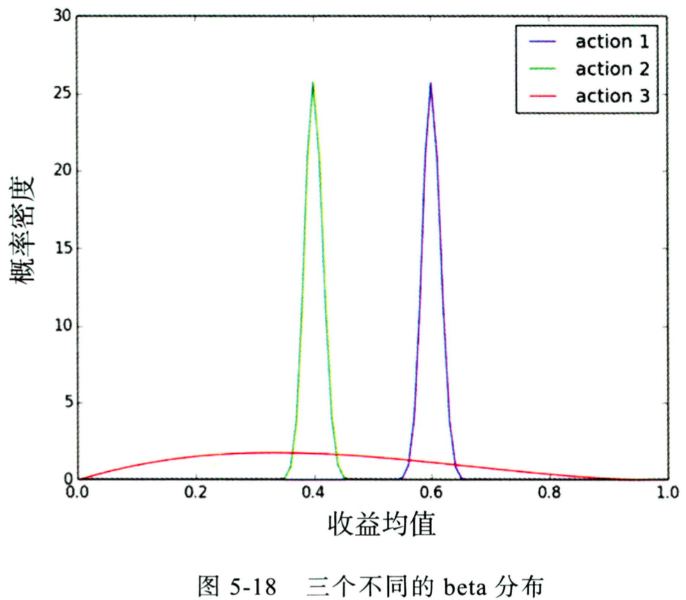
摇臂1000次，600win，400lose：
action1 ～ beta(600，400)摇臂1000次，400win，600lose：
action2 ～ beta(400，600)摇臂100次，30win，70lose：
action3 ～ beta(30，70)前两个摇臂次数多，不确定性很小，期望收益在峰值附近，但是产生较大随机数的概率也较少，最后一个摇臂次数少，但是有可能产生更大的随机数（对新样本的倾向性）。
5.2.5 个性化探索与利用
动机：传统MAB无法引人用户的上下文和个性化信息，只能进行全局性的探索。
LinUCB算法
在挑选老虎机时使用 LinUCB 的探索与利用得分计算方法，在更新模型时，使用基于岭回归的模型更新方法 。
5.2.6 基于模型的探索与利用
6. Pipeline
6.1 数据和采样

尝试不同的采样率，通过实验做选择。
- 全局负采样（在召回前的大物料池中采样负样本）
- 随机负采样
- 基于流行度的采样（一个商品很流行，但是某个用户没有交互过，可以采出来作为这个用户的负样本）
- 其他
6.1.1 ctr漂移与矫正
负样本在采样之后会改变数据的分布，因此在预估点击率时还需要将原始分布还原（即下采样之后会过高的评估ctr，但是在实际场景中负样本没有下采样，负样本还是很多）

q：矫正之后的ctr
p：模型预估的ctr
w：采样比例（如0.025）
6.2 特征
如何设计特征：将自己代入场景，想象自己的点击行为受什么因素影响
类别特征
a) 多类别multi-hot
b) 离散化
内容特征
a) 字符串进行Hash同余
b) nlp embedding
c) ocr
连续特征
分桶/直接输入
6.2.1 常用特征
6.2.1.1 用户行为
显性反馈行为（数据量小） 和 隐性反馈行为
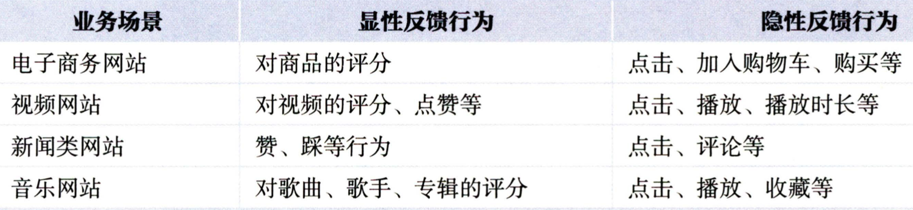
用户行为的表示
a) 用户交互的item_id进行multi_hot
b) 将item_id进行embedding后做 sum pooling 或者通过 attention 做 weighted sum
c）graph embedding
d) maybe more...
6.2.1.2 用户社交网络
利用方式：
a) 将用户关系作为召回层的一种物品召回方式
b) 利用用户和物品的交互graph生成用户和商品的graph embedding
c) 利用关系数据，通过"好友"的特征为用户添加新的属性特征
6.2.1.3 标签类别
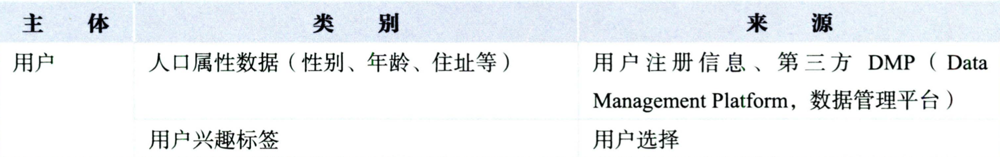

建模方法：
a) multi-hot
b) embedding
5.2.1.4 内容类
- 文本
- 视频
6.2.1.5 上下文信息
上下文信息( context )是描述推荐行为产生的场景的信息。
最常用的是：时间、地点、季节、月份、是否节假日、天气、 空气质量、社会大事件等。
6.2.1.6 统计类特征
统计类特征一般是一些粗粒度的预测指标，往往与最后的预测目标有较强的相关性。
如历史 CTR、历史 CVR、 物品热门程度、物品流行程度等
6.2.1.7 交叉特征
交叉方式
人为交叉（如：年龄+性别）
传统的机器学习模型无法直接捕捉到两类特征之间的交互，因此需要显式地进行特征交叉， 但是会造成维度灾难，需要尝试所有交叉后才知道哪个更有效
GBDT
因子分解机
每个特征可以被分解成相同空间中的K维向量表示，利用它们向量的点积表达交互强弱
深度模型交叉（注意限定特征域间交叉可能有更好的效果）
将深度学习模型输出的中间结果当作高层语义特征，输入到传统的浅层机器学习模型中
Inner Product Pattern

Outer Product Pattern
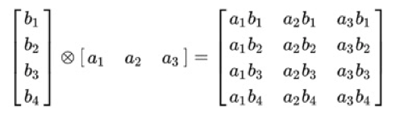
Hadamard Product Pattern

Self-Attention Pattern
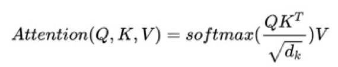
6.2.2 特征分桶
xxxxxxxxxx61float --> is categorical --> CATE 特征组成的字典2--> is numeric --> NUM 原始值3--> NUM_BUCK 根据分位数分bins4--------------------------------------------------------------5str --> is categorical --> CATE 特征组成的字典6--> is identity --> HASH bucket_size
分桶的目的
- 分桶后得到的稀疏向量，内积乘法运算速度更快，计算结果更方便存储
- 对异常数据有很强的鲁棒性，粗粒度分桶在数据分布差异较大的时候鲁棒性好
分桶评价方法
- 单个桶内，正负样本比例
- 每个桶内都有足够的样本
- 每个桶内的样本取值分布是否均匀
常用的分桶方法
等距分桶
适合样本分布比较均匀的情况
等频分桶（分位数）
每个桶有一样多的样本，但可能出现数值相差太大的样本放在同个桶的情况
模型分桶
- 树模型，利用特征分割点进行离散化。
- 聚类，聚类中心作为分桶边界
有监督的卡方分桶
初始化，按照属性值的大小进行排序，把每个属性当作单独的一组。
对于每一对相邻的组计算卡方值（n组计算n-1个卡方值）。
把卡方值最小的一对相邻组合并为一组。
重复2~3直到停止标准（卡方值不低于事先设定的阈值或者分组数达到一定条件）。 卡方值计算如下：
其中
6.2.3 特征预处理
连续型特征
如：用户年龄、统计类特征、物品的发布时间 、 影片的播放时长等数值型特征
归一化（保证量纲）
离散分桶
- 防止连续值带来的过拟合
- 特征值分布不均匀时，模型对大的特征值敏感
加非线性函数
原始特征通过非线性函数做变换，再和原始特征一起加入模型进行训练，更好地捕获特征与优化目标之间的非线性关系，增强模型的非线性表达能力。
类别型特征
- one-hot or multi-hot
- embedding
字符型/ID特征
hash分桶
6.2.4 特征实时性

客户端
客户端能够缓存 session 内部的行为，将其作为与上下文特征同样的实时特征传给推荐服务器，那么推荐模型就能够实时地得到 session 内部的行为特征，进行实时的推荐。
流计算平台
将日志以流的形式进行微批处理( mini batch )。 由于每次需要等待并处理一小批日志，流计算平台并非完全实时的平台，但它的优势是能够进行 一些简单的统计类特征的计算，比如一个物品在该时间窗口内的曝光次数，点击次数、一个用户在该时间窗口内的点击话题分布等 。
流计算平台计算出的特征可以立刻存入特征数据库供推荐模型使用 。 虽然无法实时地根据用户行为改变用户结果，但分钟级别的延迟基本可以保证推荐系统能够准实时地引人用户的近期行为 。
分布式批处理
离线处理无法满足"实时"推荐，因此更多的是保证推荐系统特征的全面性，以便在用户下次登录时进行更准确的推荐 。
6.3 模型
6.3.1 模型更新方式

6.3.1.1 全量更新
定期全量更新
6.3.1.2 增量更新
缺点：增量更新的模型往往无法找到全局最优点，因此经常采用增量更新与全局更新相结合（类似学校OCR冷启动）的方式，在进行了几轮增量更新后，在业务量较小的时间窗口进行全局更新，纠正模型在增量更新过程中积累的误差。
6.3.1.3 在线学习
在获得一个新的样本的同时更新模型，通过 SGD 的训练方式实现。
缺点
SGD相比 batch 的方式，容易产生小权重的特征，是的模型稀疏性不高，增大了模型体积，不利于更新和部署。为了在在线学习过程中兼顾训练效果和模型稀疏性，有大量相关的研究，最著名的包括微软的 FOBOS、谷歌的 FTRL等。
在线学习的另一个方向是强化学习。DRN应用了一种竞争梯度下降,通过"随机探索新的深度学习模型参数，并根据实时效果反馈进行参数调整"的方法进行在线学习.
6.3.1.4 局部更新
降低训练效率低的部分的更新频率，提高训练效率高的部分的更新频率。通常用于预训练embedding+NN的模型，局部高频更新下游。如GBDT+LR中，粗粒度训练GBDT，细粒度训练LR。
6.3.1.5 客户端更新
物品 Embedding 的更新一般需要全局的数据，因此只能在离线更新。
用户 Embedding 更多依赖用户自身的数据。把用户 Embedding 的更新过程移植到客户端，能实时地把用户最近的行为数据反映到用户的 Embedding 中来，从而可以在客户端通过实时改变用户 Embedding 的方式完成推荐结果的实时更新。具体为携带着用户embedding去请求服务器。
6.3.2 模型的优化目标
6.3.2.1 CTR
推荐标题党吸引CTR上升
6.3.2.2 CVR

存在的问题
模型假设空间不同
训练场景中：用点击+转化的数据训练CVR，
- 正样本：转化了的数据
- 负样本：点击但是没有转化的数据
在线场景中：用户看到的是曝光的items。CVR模型需要根据曝光item对cvr进行预估。
一般的解决办法
分两步，首先构建CTR预估模型，然后构建CVR模型。
缺点：
第一步过程中仅优化ctr，然后优化cvr，不是全局最优解。
解决方案：
多目标优化模型如：ESMM (EntireSpaceMulti-taskModel)， 同时模拟 "曝光到点击 "和"点击到转化"两个阶段。
6.3.2.3 用户播放时长
如YouTube引入播放时长作为优化目标...
6.3.2.4 目标函数非凸
陷入局部最优时需要对随机梯度下降法失效的原因进行深入分析，并利用改进的方法进行训练
6.4 模型评估
6.4.1 离线评估
离线阶段常用的评估指标有Log Loss和AUC。 Log Loss衡量预测点击率与实际点击率的吻合程度; AUC评价模型的排序能力，即获得点击的样本应尽量排在未获得点击的样本前面。 一方面，我们希望预测的点击率尽可能精准; 另一方面，又希望更有可能获得点击的广告被尽可能地排列在前面。 所以要 求两个指标都得到比较好的结果至于哪个指标作为主要指标要视具体的业务场景而定。
6.4.2 在线评估
A/B实验
6.4.3 其他指标
点击率（单纯提升点击率为目标，会造成"标题党效应"）
- pv点击率=点击次数/曝光次数
- uv点击率=点击人数/曝光人数
召回率和准确率

R(u): 用户u的推荐列表 T(u): 用户u的在测试集合上的行为列表（测试集上所有的正样本）
覆盖率
覆盖率反映了推荐算法发掘长尾的能力，覆盖率越高，说明推荐算法越能够将长尾中的物品推荐给用户。
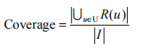
分子部分表示实验中所有被推荐给用户的物品数目(集合去重)，分母表示数据集中所有物品的数目
基尼系数
动机：覆盖率只能说明商品的种类问题，不能说明每种商品的“出场频率”。推荐系统是否具有马太效应的简单办法就是使用基尼系数。 如果G1是从初始用户行为中计算出的物品流行度的基尼系数， G2是从推荐列表中计算出的物品流行度的基尼系数，那么如果G2 > G1，就说明推荐算法具有马太效应（热销更热销，长尾更冷门）。
- 计算基尼系数时：p(x)=物品x的流行度/所有物品流行度的和
7. 工程实现
数据流
批处理大数据架构
分布式存储 + Map Reduce 的架构只能批量处理已经落盘的静态数据，无法在数据采集、传输等数据流动的过程中处理数据，因此被称为批处理大数据架构。

优点
解决海量数据的存储和计算问题
缺点
只能批量处理分布式文件系统已经落盘的静态数据，数据处理的延迟较大
流计算大数据架构
在数据流产生及传递的过程中流式地消费并处理数据，流计算架构中"滑动窗口"的概念非常重要，在每个"窗口"内部，数据被短暂缓存并消费，在完成一个窗口的数据处理后，流计算平台滑动到下一时间窗口进行新一轮的数据处理，理论上，流计算平台的延迟仅与滑动 窗口的大小有关。
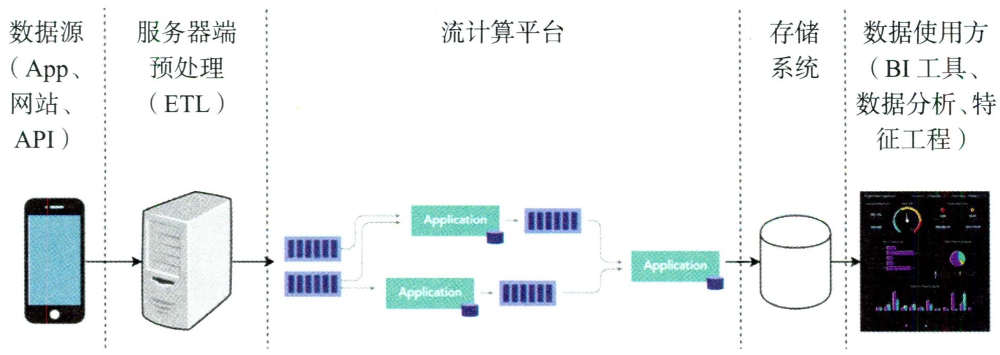
优点
- 可以对多个不同数据流进行 join 操作，并在同一个时间窗口内做整合处理 。
- 一个流计算环节的输出还可以成为下游应用的输入。
- 延迟小，数据流的灵活性强 。 这对于数据监控 、推荐系统特征实时更新，以及推荐模型实时训练有很大的帮助。
缺点
- 纯流计算的大数据架构摒弃了批处理的过程， 这使得数据合法性检查 、数据回放、全量数据分析等应用场景下表现不好。
- 在时间窗口较短的情况下，日志乱序、 Join 操作造成的数据遗漏会使数据的误差累计。
常用的流计算平台
- Strom
- Spark Streaming
- Flink（将所有数据均看作"流"，把批处理当作流计算的一种特殊情况）
Lambda架构
动机：对流计算和批处理架构做一定程度的融合 ，取长补短。
思路：将数据分裂成实时流和离线处理两部分，最终对实时流数据和离线层数据进行合并，利用离线层数据对实时流数据进行校验和纠错。
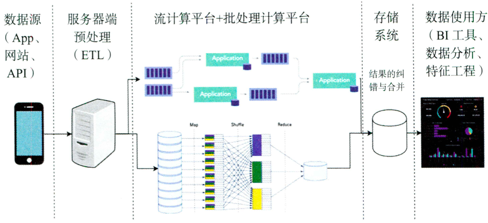
缺点：实时流和离线处理存在大量逻辑冗余，重复计算，浪费资源
Kappa架构
动机：解决Lambda架构的冗余问题
思路：无论是真正的流还是离线批处理，都被流的形式执行，批处理仅是流处理的一种特殊形式
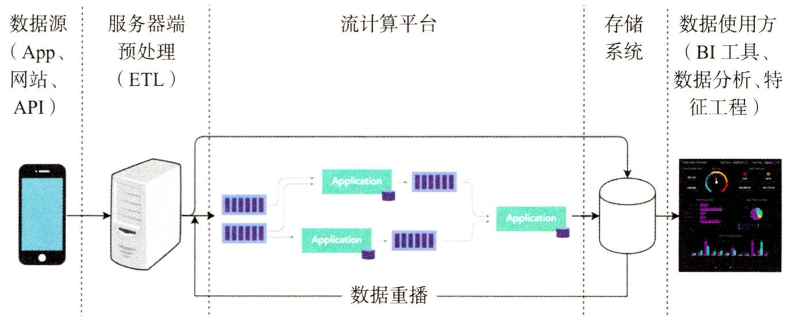
流计算框架实现批处理的方式
批处理也采用时间窗口的方式，时间窗口比流数据的窗口长，计算逻辑和流处理相同
原始数据存储+数据重播
- 原始数据存储：将未经流处理的数据或者日志原封不动地保存到分布式文件系统中
- 数据重播：原始数据按时间顺序进行重播，并用同样的流处理框架进行处理，从而完成离线状态下的数据批处理。
大数据平台与推荐系统
在Lambda或Kappa架构的流处理层上增加机器学习层，将ML和数据处理融为一体

如果推荐模型希望进行准实时甚至实时的训练更新，那么对大数据平台数据处理能力的要求会非常高。利用流计算平台实时地对数据进行特征工程的计算，不同数据流的 Join 操作是必须要进行的，甚至可以将模型的更新过程整合进流计算平台之中。
模型离线训练
在推荐、广告、搜索等互联网场景下，动辄 TB 甚至 PB 级的数据量导致几 乎不可能在传统单机环境下完成机器学习模型的训练，分布式机器学习训练成为唯一的选择。
Spark MLlib
Spark分布式计算原理
分布式：计算节点之间不共享内存， 需要通过网络通信的方式交换数据。
模型线上部署
思考
如何将embedding融入到特征中
用户/商品进行聚类
k-means, 高斯混合聚类, 主题模型（LDA）
- 用户多次点击但是没有完成任务，此时应该表明用户对此任务有兴趣（类似加购物车），算是隐性反馈行为
- 用户点击到转化时间gap的处理：
除了为每个行 为建立全局统一 的 request id (请求 id )，还建立了 HashQueue (哈希队列)用于 缓存曝光记录 。 在 HashQueue 中的曝光记录，如果在等待窗口过期时还没有匹配到点击，就会被当作负样本。此等待窗口期的设定难免会zao成部分点击数据遗漏，解决方法是阶段性地对所有数据进行全量重新处 理，避免流处理平台产生的误差积累。
DIDI
特征
特征重要性
直方图
离散特征直接根据特征取值画点击率直方图，查看是否有区分性。
单特征和ctr相关性
xgb特征重要性
消融实验
上下文特征
- 操作系统
- 手机品牌
- 系统版本
User
用户状态特征
- 性别
- 年龄
- 教育程度
- 星座
- 行业
- 所在城市
- app版本
- 注册时间
- 手机类型
- 实名状态
- 注册渠道
- 会员等级
消费习惯特征
- 30天拼车完单量
- 30天快车完单量
- 消费等级
- 剩余券数量等
统计类特征
统计天数的不同也可以更好的反应用户的兴趣变化
- 不同用户N天内点击率
- 不同教育程度N天点击率
- 不同性别N天点击率
- 不同消费能力N天点击率
- 不同手机品牌N天点击率
内容类
- 选取用户一个月以内的点击文本当用户历史文本，文本去停用词，以TOP N个词的词向量表示。
- 相应的商品描述向量表示： 以TOP N个词的词向量表示。
Item
固有属性特征
分类特征
- 目标/品牌宣传标签
- 场景/商旅
- 内容新产品
- 优惠类型/红包满减
- 业务线
- 类别（OCR）
- 场景
统计类（感知U/I的反馈特征）
通过调节统计天数以获得长短期热门指标来区分热门新品和持续畅销
- 商品N天内点击率
- 不同tag下N天点击率
交叉特征
同类组合用于tag制作
- 基于用户基础特征组合来表示某类人群的点击倾向
- 基于商品基础特征组合来表示不同属性商品的点击倾向
- 某个商品在同类型商品中的点击倾向排名
User和Item组合
我们仅仅考虑基础特征和统计特征时，我们只考虑了单个用户、单个套餐本身的属性对最终决策贡献。当某个套餐非常热门时，那么套餐三天点击率的这类特征会有很大贡献，即使用户不喜欢这个商品，当前商品的分值也会很高，导致误推荐。但在引入如用户对套餐类别的偏好作为交叉特征后，即可从一定程度上反映用户对套餐的偏好，即使该商品热门，但用户对此类商品不感兴趣，最终的排序分值也会较低，从而达到更好的推荐效果。
因此我们将用户和商品的基础特征进行交叉，以表示用户对于某类商品的喜爱程度，直接拼接特征，之后做onehot
内容类
Bert，CV获取embedding
OCR
OCR
预处理
对文本高频错别字进行校正，譬如 "_口价" 校正 "一口价"。
拼接
素材文本以“标题、内容、点击按钮内容” 三项短文本组成，目前这三项文本拼接成一行文本。
分词：jieba
去除停用词（得到top3）
tfidf：提取关键词策略有很多（e.g信息熵、互信息等），但目前素材文本较短，且词组变化不大，tf-idf 简单快速有效。
特征表示：
- 商品：以TOP N个词的词向量表示。
- 用户：用户w2v以 用户历史点击过图片的文本的w2v的平均值（avg pooling）。
img2vec
前根据Resnet pretrain的分类模型预测图片，并提取全连接层前的隐向量, 1560维。
降维
- 向量标准化后PCA，之后选取特征贡献度大于90%的特征，作为最终的图片隐向量（约<10维）。
- pooling操作
BERT
ResNet：图片分类模型中间层权重作为embedding向量
序列行为建模
首先离线计算好全部商品向量特征，对于线上一个固定的用户U，获取其点击或购买过的套餐序列后，将对应向量进行合并，合并后的向量表示了用户的历史兴趣。我们将合并后的向量与待打分套餐商品向量计算相似度作为特征，相似度越高，特征值越大，证明当前商品与用户历史兴趣更相似。实际上，序列特征是一种特殊的交叉特征。
优点：
更好的表达用户兴趣
用户兴趣计算可干预
- 序列长度（表征长短期兴趣）
- 某一行为下最高频的K个商品作为用户序列来表示不同行为粒度下的兴趣
- 行为序列merge多样，可以选用Mean算子获取全局兴趣，Max算子获取最强烈兴趣，attention自动计算权重
召回
基于图的召回
用户对商品的行为构建图，建模用户、商品的相似性；具有兴趣拓展的能力；可以捕获Item间的状态转移关系
deepwalk
GraphSage
基于内容的召回
基于商品图片、文本内容的召回，有效解决商品的冷启动问题，可以召回与用户感兴趣的商品相似度非常高的商品
OCR
BERT
ResNet：图片分类模型中间层权重作为embedding向量
基于模型的召回
深度模型可以抽象用户对商品的偏好，可扩展性强
DSSM
MIND
基于规则的召回
保证头部商品的曝光、新商品的展示；对新用户友好
热门商品
人气新品
最新上架
排序
规则/策略
机器学习模型
LR， XGB：较好的表达能力，具有一定可解释性
深度学习模型
FM，DeepFM，xDeepFM，DCN，VDCN
后排序
- 静态加权：业务在物料表中传入权重字段
- 动态加权：业务在请求时传入权重
- 多样性打散：基于某一维度（如类别）对返回的item打散，提高结果的多样性。
- 新内容曝光：强制新item按照一定比例曝光
- 已读过滤：过滤用户一定时间内已读内容
样本
曝光事件重复
对于曝光/点击/关闭，将关闭作为负样本》
乘客端公告，行程中消息，
计算广告
广告基础知识
ROI
投入：买流量的投入
产出：sum(ctr*点击价值)
产出的不同分解对应了
结算方式
CPM(Cost per mille)
每千次曝光要付多少钱，适用于短期无法衡量ROI的品牌广告
CPC(Cost per Click)
每点击一次付多少钱，适用于directly response 的广告，广告网络负责估计ctr，广告主BI团队负责估计click value
CPA/CPS/ROI
每完成一次转化，广告主付多少钱，
合约广告
合约广告的客户通常是品牌类广告主， 它们的主要诉求是向公众宣传自己的品牌形象，并不显式地评估后续的转化效果。 合约广告一般以CPM(Cost per mille，千次曝光成本)进行结算。
竞价广告
广告对特定的关键词进行出价，用户输入的查询与广告竞标的关键词进行匹配， 检索出所有符合条件的广告，并选择其中的一条或几条广告与搜索的网页结果一起展示， 通常广告排在网页之前。搜索广告一般按点击结算， 在用户点击之后按照广告主对该关键词的出价收费，没有点击则不收费， 因此点击率预估算法对竞价广告的优化至关重要
程序化交易广告
and more
搜索引擎
一句话描述
- 把计算机中存储的信息与用户的信息需求(information need)相匹配，并把匹配的结果展示出来。
数据来源
爬虫
- 从一些网页出发，根据web之间的交互链接获取新的爬虫地址
解析
网页存储
索引
索引是什么
- 反转列表，每一个单词都拥有一个反转列表，记录了单词在哪些文档出现，出现多少次，出现在什么位置 等信息。
- 其他，如维护文档ID到文档的mapping，存储单词属性和文档属性的其他数据结构。
如何创建索引
文档解析
- 分词、词干提取、停用词过滤、词性标注、n-gram、命名实体
存储上述信息，进行反转列表创建
- 利用M/R进行索引生成。对于每个机器来说，索引程序一边扫描输入文档，一边在内存中更新索引的数据结构。当内存中得数据大小超过一定阀值时，这些内容被作为一个块(block)一次性写入硬盘文件中。当所有文档扫描结束后这些块会再被合并成一个大的反转文件(Inverted file)。
索引访问机制
- 通过一个单词找到它所对应的反转列表。大概可以使用两种数据结构：b-tree 或 Hash table。
- 为了提高效率，索引中的单词和文档都用整形的ID表示而不是字符串。单词ID和字符串的映射由Term Dictionary维护，它还存储了关于此单词一些其他信息，比如在多少文件中出现(document frequency)，在文档中出现概率(inverse document frequency = total document count／document frequency)。
搜索
query生成解析树。
进行一些类似于创建索引时对文本的处理，然后生成树
例子：搜索词“iphone 6 售价”会被解析成一个树形结构：叶子节点就是一个个关键词，非叶子结点是搜索引擎自己定义的查询运算符（query operator）。比如可以被解析成
AND(TERM(iphone 6)，TERM(售价))
分数列表
- 每个词对应一个分数列表，记录这个单词所出现的文档拥有的分数。
流程
- TERM运算符查询出每一个单词对应的反转列表
- AND运算符将每个反转列表转换成分数列表，并且对于每个分数列表中的文档id集合进行求交集，结果是一个新的分数列表。
召回/排序
文档打分
IRscore
向量空间
概率模型
统计语言模型
tfidf（只关注相关行，不考虑web内容质量）
- TF：针对一个文档而言 --> 词出现个数/此文档总词数
- IDF：针对语料库而言 --> log(总文档数/包含此词的文档数)
PageRank
介绍
它的作用就是对网页的重要性打分。假设有网页A和B，A有链接指向B。如果A是一个重要网页，B的重要性也被提升。这种机制可靠的惩罚了没有被别的链接指向的欺诈网站。
计算
假设有n个网页，他们的PageRank分数用
n*1的向量n*n矩阵因为
根据打分倒排
搜推广的区别
搜索
复杂的爬虫系统和page rank
以相关性为首要准则
推荐
以用户兴趣为原则
广告
以ROI为首要准则